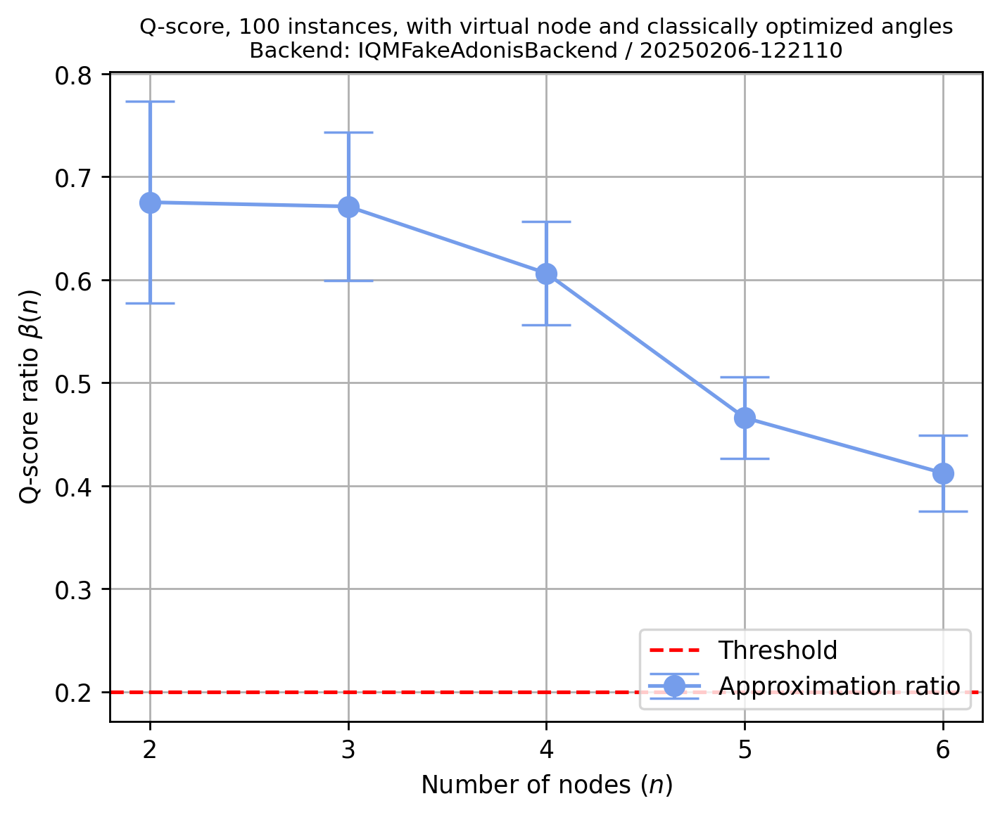
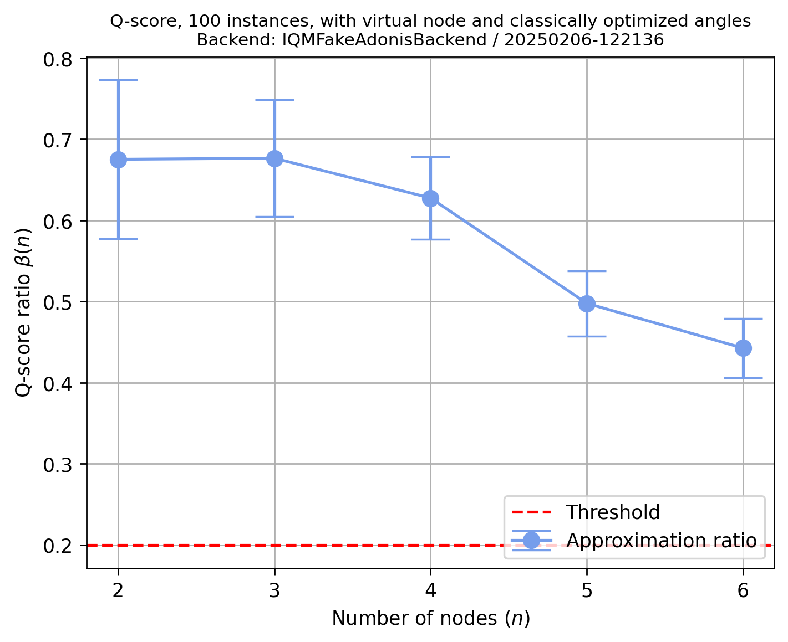

Q-Score#
%load_ext autoreload
%autoreload 2
from iqm.benchmarks.optimization.qscore import *
import random
Choose (or define) a backend#
backend = "fakeadonis"
#backend = "fakeapollo"
#backend = "garnet"
#backend = "deneb"
#backend = "pyrite"
Set IQM Token if using Resonance.#
import os
os.environ["IQM_TOKEN"] = "XXXXXXXXXXXXXX"
Qscore Configuration#
EXAMPLE_QSCORE = QScoreConfiguration(
num_instances = 100,
num_qaoa_layers= 1,
shots = 10000,
calset_id=None, # calibration set ID, default is None
min_num_nodes = 2,
max_num_nodes= None, # put it to run for all the node sizes
use_virtual_node = True,
use_classically_optimized_angles = True,
choose_qubits_routine = "custom",
custom_qubits_array=[
[2],
[2, 0],
[2, 0, 1],
[2, 0, 1, 3],
[2, 0, 1, 3, 4]],
seed = 1,
REM = False,
)
Run the experiment#
benchmark_qscore = QScoreBenchmark(backend, EXAMPLE_QSCORE)
run0_qscore = benchmark_qscore.run()
2025-02-06 12:21:11,385 - iqm.benchmarks.logging_config - INFO - Retrieving all counts
2025-02-06 12:21:11,440 - iqm.benchmarks.logging_config - INFO - Retrieving all counts
2025-02-06 12:21:11,523 - iqm.benchmarks.logging_config - INFO - Retrieving all counts
2025-02-06 12:21:11,689 - iqm.benchmarks.logging_config - INFO - Retrieving all counts
2025-02-06 12:21:11,734 - iqm.benchmarks.logging_config - INFO - Retrieving all counts
2025-02-06 12:21:11,817 - iqm.benchmarks.logging_config - INFO - Retrieving all counts
2025-02-06 12:21:11,895 - iqm.benchmarks.logging_config - INFO - Retrieving all counts
2025-02-06 12:21:11,964 - iqm.benchmarks.logging_config - INFO - Retrieving all counts
2025-02-06 12:21:12,015 - iqm.benchmarks.logging_config - INFO - Retrieving all counts
2025-02-06 12:21:12,120 - iqm.benchmarks.logging_config - INFO - Retrieving all counts
2025-02-06 12:21:12,268 - iqm.benchmarks.logging_config - INFO - Retrieving all counts
2025-02-06 12:21:12,360 - iqm.benchmarks.logging_config - INFO - Retrieving all counts
2025-02-06 12:21:12,423 - iqm.benchmarks.logging_config - INFO - Retrieving all counts
2025-02-06 12:21:12,592 - iqm.benchmarks.logging_config - INFO - Retrieving all counts
2025-02-06 12:21:12,834 - iqm.benchmarks.logging_config - INFO - Retrieving all counts
2025-02-06 12:21:12,931 - iqm.benchmarks.logging_config - INFO - Retrieving all counts
2025-02-06 12:21:12,979 - iqm.benchmarks.logging_config - INFO - Retrieving all counts
2025-02-06 12:21:13,035 - iqm.benchmarks.logging_config - INFO - Retrieving all counts
2025-02-06 12:21:13,085 - iqm.benchmarks.logging_config - INFO - Retrieving all counts
2025-02-06 12:21:13,130 - iqm.benchmarks.logging_config - INFO - Retrieving all counts
2025-02-06 12:21:13,211 - iqm.benchmarks.logging_config - INFO - Retrieving all counts
2025-02-06 12:21:13,321 - iqm.benchmarks.logging_config - INFO - Retrieving all counts
2025-02-06 12:21:13,381 - iqm.benchmarks.logging_config - INFO - Retrieving all counts
2025-02-06 12:21:13,426 - iqm.benchmarks.logging_config - INFO - Retrieving all counts
2025-02-06 12:21:13,474 - iqm.benchmarks.logging_config - INFO - Retrieving all counts
2025-02-06 12:21:13,536 - iqm.benchmarks.logging_config - INFO - Retrieving all counts
2025-02-06 12:21:13,650 - iqm.benchmarks.logging_config - INFO - Retrieving all counts
2025-02-06 12:21:13,721 - iqm.benchmarks.logging_config - INFO - Retrieving all counts
2025-02-06 12:21:13,789 - iqm.benchmarks.logging_config - INFO - Retrieving all counts
2025-02-06 12:21:13,850 - iqm.benchmarks.logging_config - INFO - Retrieving all counts
2025-02-06 12:21:13,909 - iqm.benchmarks.logging_config - INFO - Retrieving all counts
2025-02-06 12:21:13,956 - iqm.benchmarks.logging_config - INFO - Retrieving all counts
2025-02-06 12:21:14,001 - iqm.benchmarks.logging_config - INFO - Retrieving all counts
2025-02-06 12:21:14,146 - iqm.benchmarks.logging_config - INFO - Retrieving all counts
2025-02-06 12:21:14,193 - iqm.benchmarks.logging_config - INFO - Retrieving all counts
2025-02-06 12:21:14,253 - iqm.benchmarks.logging_config - INFO - Retrieving all counts
2025-02-06 12:21:14,300 - iqm.benchmarks.logging_config - INFO - Retrieving all counts
2025-02-06 12:21:14,341 - iqm.benchmarks.logging_config - INFO - Retrieving all counts
2025-02-06 12:21:14,454 - iqm.benchmarks.logging_config - INFO - Retrieving all counts
2025-02-06 12:21:14,501 - iqm.benchmarks.logging_config - INFO - Retrieving all counts
2025-02-06 12:21:14,552 - iqm.benchmarks.logging_config - INFO - Retrieving all counts
2025-02-06 12:21:14,613 - iqm.benchmarks.logging_config - INFO - Retrieving all counts
2025-02-06 12:21:14,661 - iqm.benchmarks.logging_config - INFO - Retrieving all counts
2025-02-06 12:21:14,705 - iqm.benchmarks.logging_config - INFO - Retrieving all counts
2025-02-06 12:21:14,849 - iqm.benchmarks.logging_config - INFO - Retrieving all counts
2025-02-06 12:21:14,895 - iqm.benchmarks.logging_config - INFO - Retrieving all counts
2025-02-06 12:21:14,952 - iqm.benchmarks.logging_config - INFO - Retrieving all counts
2025-02-06 12:21:15,008 - iqm.benchmarks.logging_config - INFO - Retrieving all counts
2025-02-06 12:21:15,057 - iqm.benchmarks.logging_config - INFO - Retrieving all counts
2025-02-06 12:21:15,100 - iqm.benchmarks.logging_config - INFO - Retrieving all counts
2025-02-06 12:21:15,200 - iqm.benchmarks.logging_config - INFO - Retrieving all counts
2025-02-06 12:21:15,249 - iqm.benchmarks.logging_config - INFO - Retrieving all counts
2025-02-06 12:21:15,298 - iqm.benchmarks.logging_config - INFO - Retrieving all counts
2025-02-06 12:21:15,353 - iqm.benchmarks.logging_config - INFO - Retrieving all counts
2025-02-06 12:21:15,403 - iqm.benchmarks.logging_config - INFO - Retrieving all counts
2025-02-06 12:21:15,456 - iqm.benchmarks.logging_config - INFO - Retrieving all counts
2025-02-06 12:21:15,559 - iqm.benchmarks.logging_config - INFO - Retrieving all counts
2025-02-06 12:21:15,607 - iqm.benchmarks.logging_config - INFO - Retrieving all counts
2025-02-06 12:21:15,674 - iqm.benchmarks.logging_config - INFO - Retrieving all counts
2025-02-06 12:21:15,717 - iqm.benchmarks.logging_config - INFO - Retrieving all counts
2025-02-06 12:21:15,765 - iqm.benchmarks.logging_config - INFO - Retrieving all counts
2025-02-06 12:21:15,819 - iqm.benchmarks.logging_config - INFO - Retrieving all counts
2025-02-06 12:21:15,954 - iqm.benchmarks.logging_config - INFO - Retrieving all counts
2025-02-06 12:21:16,000 - iqm.benchmarks.logging_config - INFO - Retrieving all counts
2025-02-06 12:21:16,044 - iqm.benchmarks.logging_config - INFO - Retrieving all counts
2025-02-06 12:21:16,092 - iqm.benchmarks.logging_config - INFO - Retrieving all counts
2025-02-06 12:21:16,142 - iqm.benchmarks.logging_config - INFO - Retrieving all counts
2025-02-06 12:21:16,195 - iqm.benchmarks.logging_config - INFO - Retrieving all counts
2025-02-06 12:21:16,298 - iqm.benchmarks.logging_config - INFO - Retrieving all counts
2025-02-06 12:21:16,343 - iqm.benchmarks.logging_config - INFO - Retrieving all counts
2025-02-06 12:21:16,398 - iqm.benchmarks.logging_config - INFO - Retrieving all counts
2025-02-06 12:21:16,470 - iqm.benchmarks.logging_config - INFO - Retrieving all counts
2025-02-06 12:21:16,527 - iqm.benchmarks.logging_config - INFO - Retrieving all counts
2025-02-06 12:21:16,642 - iqm.benchmarks.logging_config - INFO - Retrieving all counts
2025-02-06 12:21:16,690 - iqm.benchmarks.logging_config - INFO - Retrieving all counts
2025-02-06 12:21:16,740 - iqm.benchmarks.logging_config - INFO - Retrieving all counts
2025-02-06 12:21:17,027 - iqm.benchmarks.logging_config - INFO - Retrieving all counts
2025-02-06 12:21:17,075 - iqm.benchmarks.logging_config - INFO - Retrieving all counts
2025-02-06 12:21:17,133 - iqm.benchmarks.logging_config - INFO - Retrieving all counts
2025-02-06 12:21:17,251 - iqm.benchmarks.logging_config - INFO - Retrieving all counts
2025-02-06 12:21:17,300 - iqm.benchmarks.logging_config - INFO - Retrieving all counts
2025-02-06 12:21:17,352 - iqm.benchmarks.logging_config - INFO - Retrieving all counts
2025-02-06 12:21:17,413 - iqm.benchmarks.logging_config - INFO - Retrieving all counts
2025-02-06 12:21:17,472 - iqm.benchmarks.logging_config - INFO - Retrieving all counts
2025-02-06 12:21:17,525 - iqm.benchmarks.logging_config - INFO - Retrieving all counts
2025-02-06 12:21:17,635 - iqm.benchmarks.logging_config - INFO - Retrieving all counts
2025-02-06 12:21:17,681 - iqm.benchmarks.logging_config - INFO - Retrieving all counts
2025-02-06 12:21:17,730 - iqm.benchmarks.logging_config - INFO - Retrieving all counts
2025-02-06 12:21:17,782 - iqm.benchmarks.logging_config - INFO - Retrieving all counts
2025-02-06 12:21:17,834 - iqm.benchmarks.logging_config - INFO - Retrieving all counts
2025-02-06 12:21:17,878 - iqm.benchmarks.logging_config - INFO - Retrieving all counts
2025-02-06 12:21:17,988 - iqm.benchmarks.logging_config - INFO - Retrieving all counts
2025-02-06 12:21:18,036 - iqm.benchmarks.logging_config - INFO - Retrieving all counts
2025-02-06 12:21:18,094 - iqm.benchmarks.logging_config - INFO - Retrieving all counts
2025-02-06 12:21:18,150 - iqm.benchmarks.logging_config - INFO - Retrieving all counts
2025-02-06 12:21:18,198 - iqm.benchmarks.logging_config - INFO - Retrieving all counts
2025-02-06 12:21:18,250 - iqm.benchmarks.logging_config - INFO - Retrieving all counts
2025-02-06 12:21:18,367 - iqm.benchmarks.logging_config - INFO - Retrieving all counts
2025-02-06 12:21:18,425 - iqm.benchmarks.logging_config - INFO - Retrieving all counts
2025-02-06 12:21:18,478 - iqm.benchmarks.logging_config - INFO - Retrieving all counts
2025-02-06 12:21:18,533 - iqm.benchmarks.logging_config - INFO - Retrieving all counts
2025-02-06 12:21:18,580 - iqm.benchmarks.logging_config - INFO - Retrieving all counts
2025-02-06 12:21:18,634 - iqm.benchmarks.logging_config - INFO - Retrieving all counts
2025-02-06 12:21:18,694 - iqm.benchmarks.logging_config - INFO - Retrieving all counts
2025-02-06 12:21:18,810 - iqm.benchmarks.logging_config - INFO - Retrieving all counts
2025-02-06 12:21:18,871 - iqm.benchmarks.logging_config - INFO - Retrieving all counts
2025-02-06 12:21:18,929 - iqm.benchmarks.logging_config - INFO - Retrieving all counts
2025-02-06 12:21:18,986 - iqm.benchmarks.logging_config - INFO - Retrieving all counts
2025-02-06 12:21:19,034 - iqm.benchmarks.logging_config - INFO - Retrieving all counts
2025-02-06 12:21:19,083 - iqm.benchmarks.logging_config - INFO - Retrieving all counts
2025-02-06 12:21:19,194 - iqm.benchmarks.logging_config - INFO - Retrieving all counts
2025-02-06 12:21:19,243 - iqm.benchmarks.logging_config - INFO - Retrieving all counts
2025-02-06 12:21:19,301 - iqm.benchmarks.logging_config - INFO - Retrieving all counts
2025-02-06 12:21:19,362 - iqm.benchmarks.logging_config - INFO - Retrieving all counts
2025-02-06 12:21:19,426 - iqm.benchmarks.logging_config - INFO - Retrieving all counts
2025-02-06 12:21:19,539 - iqm.benchmarks.logging_config - INFO - Retrieving all counts
2025-02-06 12:21:19,593 - iqm.benchmarks.logging_config - INFO - Retrieving all counts
2025-02-06 12:21:19,651 - iqm.benchmarks.logging_config - INFO - Retrieving all counts
2025-02-06 12:21:19,707 - iqm.benchmarks.logging_config - INFO - Retrieving all counts
2025-02-06 12:21:19,767 - iqm.benchmarks.logging_config - INFO - Retrieving all counts
2025-02-06 12:21:19,823 - iqm.benchmarks.logging_config - INFO - Retrieving all counts
2025-02-06 12:21:19,943 - iqm.benchmarks.logging_config - INFO - Retrieving all counts
2025-02-06 12:21:20,011 - iqm.benchmarks.logging_config - INFO - Retrieving all counts
2025-02-06 12:21:20,080 - iqm.benchmarks.logging_config - INFO - Retrieving all counts
2025-02-06 12:21:20,142 - iqm.benchmarks.logging_config - INFO - Retrieving all counts
2025-02-06 12:21:20,200 - iqm.benchmarks.logging_config - INFO - Retrieving all counts
2025-02-06 12:21:20,254 - iqm.benchmarks.logging_config - INFO - Retrieving all counts
2025-02-06 12:21:20,322 - iqm.benchmarks.logging_config - INFO - Retrieving all counts
2025-02-06 12:21:20,628 - iqm.benchmarks.logging_config - INFO - Retrieving all counts
2025-02-06 12:21:20,685 - iqm.benchmarks.logging_config - INFO - Retrieving all counts
2025-02-06 12:21:20,737 - iqm.benchmarks.logging_config - INFO - Retrieving all counts
2025-02-06 12:21:20,795 - iqm.benchmarks.logging_config - INFO - Retrieving all counts
2025-02-06 12:21:20,846 - iqm.benchmarks.logging_config - INFO - Retrieving all counts
2025-02-06 12:21:20,899 - iqm.benchmarks.logging_config - INFO - Retrieving all counts
2025-02-06 12:21:21,021 - iqm.benchmarks.logging_config - INFO - Retrieving all counts
2025-02-06 12:21:21,071 - iqm.benchmarks.logging_config - INFO - Retrieving all counts
2025-02-06 12:21:21,131 - iqm.benchmarks.logging_config - INFO - Retrieving all counts
2025-02-06 12:21:21,184 - iqm.benchmarks.logging_config - INFO - Retrieving all counts
2025-02-06 12:21:21,243 - iqm.benchmarks.logging_config - INFO - Retrieving all counts
2025-02-06 12:21:21,298 - iqm.benchmarks.logging_config - INFO - Retrieving all counts
2025-02-06 12:21:21,355 - iqm.benchmarks.logging_config - INFO - Retrieving all counts
2025-02-06 12:21:21,465 - iqm.benchmarks.logging_config - INFO - Retrieving all counts
2025-02-06 12:21:21,519 - iqm.benchmarks.logging_config - INFO - Retrieving all counts
2025-02-06 12:21:21,574 - iqm.benchmarks.logging_config - INFO - Retrieving all counts
2025-02-06 12:21:21,628 - iqm.benchmarks.logging_config - INFO - Retrieving all counts
2025-02-06 12:21:21,678 - iqm.benchmarks.logging_config - INFO - Retrieving all counts
2025-02-06 12:21:21,735 - iqm.benchmarks.logging_config - INFO - Retrieving all counts
2025-02-06 12:21:21,850 - iqm.benchmarks.logging_config - INFO - Retrieving all counts
2025-02-06 12:21:21,902 - iqm.benchmarks.logging_config - INFO - Retrieving all counts
2025-02-06 12:21:21,951 - iqm.benchmarks.logging_config - INFO - Retrieving all counts
2025-02-06 12:21:22,007 - iqm.benchmarks.logging_config - INFO - Retrieving all counts
2025-02-06 12:21:22,062 - iqm.benchmarks.logging_config - INFO - Retrieving all counts
2025-02-06 12:21:22,126 - iqm.benchmarks.logging_config - INFO - Retrieving all counts
2025-02-06 12:21:22,294 - iqm.benchmarks.logging_config - INFO - Retrieving all counts
2025-02-06 12:21:22,349 - iqm.benchmarks.logging_config - INFO - Retrieving all counts
2025-02-06 12:21:22,416 - iqm.benchmarks.logging_config - INFO - Retrieving all counts
2025-02-06 12:21:22,474 - iqm.benchmarks.logging_config - INFO - Retrieving all counts
2025-02-06 12:21:22,523 - iqm.benchmarks.logging_config - INFO - Retrieving all counts
2025-02-06 12:21:22,576 - iqm.benchmarks.logging_config - INFO - Retrieving all counts
2025-02-06 12:21:22,715 - iqm.benchmarks.logging_config - INFO - Retrieving all counts
2025-02-06 12:21:22,769 - iqm.benchmarks.logging_config - INFO - Retrieving all counts
2025-02-06 12:21:22,823 - iqm.benchmarks.logging_config - INFO - Retrieving all counts
2025-02-06 12:21:22,875 - iqm.benchmarks.logging_config - INFO - Retrieving all counts
2025-02-06 12:21:22,929 - iqm.benchmarks.logging_config - INFO - Retrieving all counts
2025-02-06 12:21:22,978 - iqm.benchmarks.logging_config - INFO - Retrieving all counts
2025-02-06 12:21:23,031 - iqm.benchmarks.logging_config - INFO - Retrieving all counts
2025-02-06 12:21:23,153 - iqm.benchmarks.logging_config - INFO - Retrieving all counts
2025-02-06 12:21:23,203 - iqm.benchmarks.logging_config - INFO - Retrieving all counts
2025-02-06 12:21:23,259 - iqm.benchmarks.logging_config - INFO - Retrieving all counts
2025-02-06 12:21:23,308 - iqm.benchmarks.logging_config - INFO - Retrieving all counts
2025-02-06 12:21:23,369 - iqm.benchmarks.logging_config - INFO - Retrieving all counts
2025-02-06 12:21:23,440 - iqm.benchmarks.logging_config - INFO - Retrieving all counts
2025-02-06 12:21:23,567 - iqm.benchmarks.logging_config - INFO - Retrieving all counts
2025-02-06 12:21:23,905 - iqm.benchmarks.logging_config - INFO - Retrieving all counts
2025-02-06 12:21:23,970 - iqm.benchmarks.logging_config - INFO - Retrieving all counts
2025-02-06 12:21:24,038 - iqm.benchmarks.logging_config - INFO - Retrieving all counts
2025-02-06 12:21:24,118 - iqm.benchmarks.logging_config - INFO - Retrieving all counts
2025-02-06 12:21:24,180 - iqm.benchmarks.logging_config - INFO - Retrieving all counts
2025-02-06 12:21:24,303 - iqm.benchmarks.logging_config - INFO - Retrieving all counts
2025-02-06 12:21:24,377 - iqm.benchmarks.logging_config - INFO - Retrieving all counts
2025-02-06 12:21:24,450 - iqm.benchmarks.logging_config - INFO - Retrieving all counts
2025-02-06 12:21:24,520 - iqm.benchmarks.logging_config - INFO - Retrieving all counts
2025-02-06 12:21:24,582 - iqm.benchmarks.logging_config - INFO - Retrieving all counts
2025-02-06 12:21:24,644 - iqm.benchmarks.logging_config - INFO - Retrieving all counts
2025-02-06 12:21:24,783 - iqm.benchmarks.logging_config - INFO - Retrieving all counts
2025-02-06 12:21:24,903 - iqm.benchmarks.logging_config - INFO - Retrieving all counts
2025-02-06 12:21:24,971 - iqm.benchmarks.logging_config - INFO - Retrieving all counts
2025-02-06 12:21:25,043 - iqm.benchmarks.logging_config - INFO - Retrieving all counts
2025-02-06 12:21:25,115 - iqm.benchmarks.logging_config - INFO - Retrieving all counts
2025-02-06 12:21:25,177 - iqm.benchmarks.logging_config - INFO - Retrieving all counts
2025-02-06 12:21:25,316 - iqm.benchmarks.logging_config - INFO - Retrieving all counts
2025-02-06 12:21:25,389 - iqm.benchmarks.logging_config - INFO - Retrieving all counts
2025-02-06 12:21:25,445 - iqm.benchmarks.logging_config - INFO - Retrieving all counts
2025-02-06 12:21:25,509 - iqm.benchmarks.logging_config - INFO - Retrieving all counts
2025-02-06 12:21:25,570 - iqm.benchmarks.logging_config - INFO - Retrieving all counts
2025-02-06 12:21:25,641 - iqm.benchmarks.logging_config - INFO - Retrieving all counts
2025-02-06 12:21:25,761 - iqm.benchmarks.logging_config - INFO - Retrieving all counts
2025-02-06 12:21:25,825 - iqm.benchmarks.logging_config - INFO - Retrieving all counts
2025-02-06 12:21:25,886 - iqm.benchmarks.logging_config - INFO - Retrieving all counts
2025-02-06 12:21:25,950 - iqm.benchmarks.logging_config - INFO - Retrieving all counts
2025-02-06 12:21:26,026 - iqm.benchmarks.logging_config - INFO - Retrieving all counts
2025-02-06 12:21:26,094 - iqm.benchmarks.logging_config - INFO - Retrieving all counts
2025-02-06 12:21:26,229 - iqm.benchmarks.logging_config - INFO - Retrieving all counts
2025-02-06 12:21:26,303 - iqm.benchmarks.logging_config - INFO - Retrieving all counts
2025-02-06 12:21:26,366 - iqm.benchmarks.logging_config - INFO - Retrieving all counts
2025-02-06 12:21:26,415 - iqm.benchmarks.logging_config - INFO - Retrieving all counts
2025-02-06 12:21:26,470 - iqm.benchmarks.logging_config - INFO - Retrieving all counts
2025-02-06 12:21:26,521 - iqm.benchmarks.logging_config - INFO - Retrieving all counts
2025-02-06 12:21:26,571 - iqm.benchmarks.logging_config - INFO - Retrieving all counts
2025-02-06 12:21:26,689 - iqm.benchmarks.logging_config - INFO - Retrieving all counts
2025-02-06 12:21:26,752 - iqm.benchmarks.logging_config - INFO - Retrieving all counts
2025-02-06 12:21:26,827 - iqm.benchmarks.logging_config - INFO - Retrieving all counts
2025-02-06 12:21:26,890 - iqm.benchmarks.logging_config - INFO - Retrieving all counts
2025-02-06 12:21:26,950 - iqm.benchmarks.logging_config - INFO - Retrieving all counts
2025-02-06 12:21:27,019 - iqm.benchmarks.logging_config - INFO - Retrieving all counts
2025-02-06 12:21:27,157 - iqm.benchmarks.logging_config - INFO - Retrieving all counts
2025-02-06 12:21:27,228 - iqm.benchmarks.logging_config - INFO - Retrieving all counts
2025-02-06 12:21:27,299 - iqm.benchmarks.logging_config - INFO - Retrieving all counts
2025-02-06 12:21:27,361 - iqm.benchmarks.logging_config - INFO - Retrieving all counts
2025-02-06 12:21:27,437 - iqm.benchmarks.logging_config - INFO - Retrieving all counts
2025-02-06 12:21:27,528 - iqm.benchmarks.logging_config - INFO - Retrieving all counts
2025-02-06 12:21:27,585 - iqm.benchmarks.logging_config - INFO - Retrieving all counts
2025-02-06 12:21:27,728 - iqm.benchmarks.logging_config - INFO - Retrieving all counts
2025-02-06 12:21:27,787 - iqm.benchmarks.logging_config - INFO - Retrieving all counts
2025-02-06 12:21:27,857 - iqm.benchmarks.logging_config - INFO - Retrieving all counts
2025-02-06 12:21:27,916 - iqm.benchmarks.logging_config - INFO - Retrieving all counts
2025-02-06 12:21:27,972 - iqm.benchmarks.logging_config - INFO - Retrieving all counts
2025-02-06 12:21:28,028 - iqm.benchmarks.logging_config - INFO - Retrieving all counts
2025-02-06 12:21:28,086 - iqm.benchmarks.logging_config - INFO - Retrieving all counts
2025-02-06 12:21:28,206 - iqm.benchmarks.logging_config - INFO - Retrieving all counts
2025-02-06 12:21:28,271 - iqm.benchmarks.logging_config - INFO - Retrieving all counts
2025-02-06 12:21:28,330 - iqm.benchmarks.logging_config - INFO - Retrieving all counts
2025-02-06 12:21:28,393 - iqm.benchmarks.logging_config - INFO - Retrieving all counts
2025-02-06 12:21:28,462 - iqm.benchmarks.logging_config - INFO - Retrieving all counts
2025-02-06 12:21:28,524 - iqm.benchmarks.logging_config - INFO - Retrieving all counts
2025-02-06 12:21:28,653 - iqm.benchmarks.logging_config - INFO - Retrieving all counts
2025-02-06 12:21:28,714 - iqm.benchmarks.logging_config - INFO - Retrieving all counts
2025-02-06 12:21:28,774 - iqm.benchmarks.logging_config - INFO - Retrieving all counts
2025-02-06 12:21:28,846 - iqm.benchmarks.logging_config - INFO - Retrieving all counts
2025-02-06 12:21:28,916 - iqm.benchmarks.logging_config - INFO - Retrieving all counts
2025-02-06 12:21:28,972 - iqm.benchmarks.logging_config - INFO - Retrieving all counts
2025-02-06 12:21:29,099 - iqm.benchmarks.logging_config - INFO - Retrieving all counts
2025-02-06 12:21:29,167 - iqm.benchmarks.logging_config - INFO - Retrieving all counts
2025-02-06 12:21:29,227 - iqm.benchmarks.logging_config - INFO - Retrieving all counts
2025-02-06 12:21:29,288 - iqm.benchmarks.logging_config - INFO - Retrieving all counts
2025-02-06 12:21:29,352 - iqm.benchmarks.logging_config - INFO - Retrieving all counts
2025-02-06 12:21:29,419 - iqm.benchmarks.logging_config - INFO - Retrieving all counts
2025-02-06 12:21:29,488 - iqm.benchmarks.logging_config - INFO - Retrieving all counts
2025-02-06 12:21:29,626 - iqm.benchmarks.logging_config - INFO - Retrieving all counts
2025-02-06 12:21:29,692 - iqm.benchmarks.logging_config - INFO - Retrieving all counts
2025-02-06 12:21:29,759 - iqm.benchmarks.logging_config - INFO - Retrieving all counts
2025-02-06 12:21:29,839 - iqm.benchmarks.logging_config - INFO - Retrieving all counts
2025-02-06 12:21:29,896 - iqm.benchmarks.logging_config - INFO - Retrieving all counts
2025-02-06 12:21:29,963 - iqm.benchmarks.logging_config - INFO - Retrieving all counts
2025-02-06 12:21:30,031 - iqm.benchmarks.logging_config - INFO - Retrieving all counts
2025-02-06 12:21:30,172 - iqm.benchmarks.logging_config - INFO - Retrieving all counts
2025-02-06 12:21:30,237 - iqm.benchmarks.logging_config - INFO - Retrieving all counts
2025-02-06 12:21:30,294 - iqm.benchmarks.logging_config - INFO - Retrieving all counts
2025-02-06 12:21:30,355 - iqm.benchmarks.logging_config - INFO - Retrieving all counts
2025-02-06 12:21:30,420 - iqm.benchmarks.logging_config - INFO - Retrieving all counts
2025-02-06 12:21:30,484 - iqm.benchmarks.logging_config - INFO - Retrieving all counts
2025-02-06 12:21:30,620 - iqm.benchmarks.logging_config - INFO - Retrieving all counts
2025-02-06 12:21:30,694 - iqm.benchmarks.logging_config - INFO - Retrieving all counts
2025-02-06 12:21:30,757 - iqm.benchmarks.logging_config - INFO - Retrieving all counts
2025-02-06 12:21:30,811 - iqm.benchmarks.logging_config - INFO - Retrieving all counts
2025-02-06 12:21:30,880 - iqm.benchmarks.logging_config - INFO - Retrieving all counts
2025-02-06 12:21:30,973 - iqm.benchmarks.logging_config - INFO - Retrieving all counts
2025-02-06 12:21:31,043 - iqm.benchmarks.logging_config - INFO - Retrieving all counts
2025-02-06 12:21:31,181 - iqm.benchmarks.logging_config - INFO - Retrieving all counts
2025-02-06 12:21:31,244 - iqm.benchmarks.logging_config - INFO - Retrieving all counts
2025-02-06 12:21:31,316 - iqm.benchmarks.logging_config - INFO - Retrieving all counts
2025-02-06 12:21:31,386 - iqm.benchmarks.logging_config - INFO - Retrieving all counts
2025-02-06 12:21:31,451 - iqm.benchmarks.logging_config - INFO - Retrieving all counts
Perform Analysis#
result0_qscore = benchmark_qscore.analyze()
2025-02-06 12:21:32,329 - iqm.benchmarks.logging_config - INFO - Q-Score = 2 passed with approximation ratio (Beta) 0.6753; Avg MaxCut size: 0.5900
2025-02-06 12:21:32,935 - iqm.benchmarks.logging_config - INFO - Q-Score = 3 passed with approximation ratio (Beta) 0.6713; Avg MaxCut size: 1.3709
2025-02-06 12:21:33,797 - iqm.benchmarks.logging_config - INFO - Q-Score = 4 passed with approximation ratio (Beta) 0.6064; Avg MaxCut size: 2.3635
2025-02-06 12:21:34,978 - iqm.benchmarks.logging_config - INFO - Q-Score = 5 passed with approximation ratio (Beta) 0.4661; Avg MaxCut size: 3.4276
2025-02-06 12:21:36,619 - iqm.benchmarks.logging_config - INFO - Q-Score = 6 passed with approximation ratio (Beta) 0.4124; Avg MaxCut size: 4.8288
result0_qscore.observations
[BenchmarkObservation(name='mean_approximation_ratio', value=0.6753267011332195, identifier=BenchmarkObservationIdentifier(qubit_indices=2), uncertainty=0.09818278368319852),
BenchmarkObservation(name='is_succesful', value='True', identifier=BenchmarkObservationIdentifier(qubit_indices=2), uncertainty=None),
BenchmarkObservation(name='Qscore_result', value=2, identifier=BenchmarkObservationIdentifier(qubit_indices=2), uncertainty=None),
BenchmarkObservation(name='mean_approximation_ratio', value=0.671265912977805, identifier=BenchmarkObservationIdentifier(qubit_indices=3), uncertainty=0.07181660091883925),
BenchmarkObservation(name='is_succesful', value='True', identifier=BenchmarkObservationIdentifier(qubit_indices=3), uncertainty=None),
BenchmarkObservation(name='Qscore_result', value=3, identifier=BenchmarkObservationIdentifier(qubit_indices=3), uncertainty=None),
BenchmarkObservation(name='mean_approximation_ratio', value=0.606424859550562, identifier=BenchmarkObservationIdentifier(qubit_indices=4), uncertainty=0.04992891626798265),
BenchmarkObservation(name='is_succesful', value='True', identifier=BenchmarkObservationIdentifier(qubit_indices=4), uncertainty=None),
BenchmarkObservation(name='Qscore_result', value=4, identifier=BenchmarkObservationIdentifier(qubit_indices=4), uncertainty=None),
BenchmarkObservation(name='mean_approximation_ratio', value=0.4660829943069406, identifier=BenchmarkObservationIdentifier(qubit_indices=5), uncertainty=0.039850840281526134),
BenchmarkObservation(name='is_succesful', value='True', identifier=BenchmarkObservationIdentifier(qubit_indices=5), uncertainty=None),
BenchmarkObservation(name='Qscore_result', value=5, identifier=BenchmarkObservationIdentifier(qubit_indices=5), uncertainty=None),
BenchmarkObservation(name='mean_approximation_ratio', value=0.4123816132773329, identifier=BenchmarkObservationIdentifier(qubit_indices=6), uncertainty=0.03684179706403903),
BenchmarkObservation(name='is_succesful', value='True', identifier=BenchmarkObservationIdentifier(qubit_indices=6), uncertainty=None),
BenchmarkObservation(name='Qscore_result', value=6, identifier=BenchmarkObservationIdentifier(qubit_indices=6), uncertainty=None)]
result0_qscore.plot_all()

Execution with REM#
EXAMPLE_QSCORE = QScoreConfiguration(
num_instances = 100,
num_qaoa_layers= 1,
shots = 10000,
calset_id=None, # calibration set ID, default is None
min_num_nodes = 2,
max_num_nodes=None,
use_virtual_node = True,
use_classically_optimized_angles = True,
choose_qubits_routine = "custom",
custom_qubits_array=[
[2],
[2, 0],
[2, 0, 1],
[2, 0, 1, 3],
[2, 0, 1, 3, 4],
[2, 0, 1, 3, 4]],
seed = 1,
REM = True,
mit_shots = 1000,
)
benchmark_qscore = QScoreBenchmark(backend, EXAMPLE_QSCORE)
run0_qscore = benchmark_qscore.run()
2025-02-06 12:21:37,490 - iqm.benchmarks.logging_config - INFO - Retrieving all counts
2025-02-06 12:21:37,517 - iqm.benchmarks.logging_config - INFO - REM: 4 calibration circuits to be executed!
2025-02-06 12:21:37,578 - iqm.benchmarks.logging_config - INFO - Retrieving all counts
2025-02-06 12:21:37,695 - iqm.benchmarks.logging_config - INFO - REM: 4 calibration circuits to be executed!
2025-02-06 12:21:37,774 - iqm.benchmarks.logging_config - INFO - Retrieving all counts
2025-02-06 12:21:37,804 - iqm.benchmarks.logging_config - INFO - REM: 4 calibration circuits to be executed!
2025-02-06 12:21:37,907 - iqm.benchmarks.logging_config - INFO - Retrieving all counts
2025-02-06 12:21:37,936 - iqm.benchmarks.logging_config - INFO - REM: 4 calibration circuits to be executed!
2025-02-06 12:21:37,979 - iqm.benchmarks.logging_config - INFO - Retrieving all counts
2025-02-06 12:21:38,008 - iqm.benchmarks.logging_config - INFO - REM: 4 calibration circuits to be executed!
2025-02-06 12:21:38,070 - iqm.benchmarks.logging_config - INFO - Retrieving all counts
2025-02-06 12:21:38,180 - iqm.benchmarks.logging_config - INFO - REM: 4 calibration circuits to be executed!
2025-02-06 12:21:38,231 - iqm.benchmarks.logging_config - INFO - Retrieving all counts
2025-02-06 12:21:38,259 - iqm.benchmarks.logging_config - INFO - REM: 4 calibration circuits to be executed!
2025-02-06 12:21:38,326 - iqm.benchmarks.logging_config - INFO - Retrieving all counts
2025-02-06 12:21:38,355 - iqm.benchmarks.logging_config - INFO - REM: 4 calibration circuits to be executed!
2025-02-06 12:21:38,404 - iqm.benchmarks.logging_config - INFO - Retrieving all counts
2025-02-06 12:21:38,432 - iqm.benchmarks.logging_config - INFO - REM: 4 calibration circuits to be executed!
2025-02-06 12:21:38,558 - iqm.benchmarks.logging_config - INFO - Retrieving all counts
2025-02-06 12:21:38,587 - iqm.benchmarks.logging_config - INFO - REM: 4 calibration circuits to be executed!
2025-02-06 12:21:38,738 - iqm.benchmarks.logging_config - INFO - Retrieving all counts
2025-02-06 12:21:38,767 - iqm.benchmarks.logging_config - INFO - REM: 4 calibration circuits to be executed!
2025-02-06 12:21:38,864 - iqm.benchmarks.logging_config - INFO - Retrieving all counts
2025-02-06 12:21:38,895 - iqm.benchmarks.logging_config - INFO - REM: 4 calibration circuits to be executed!
2025-02-06 12:21:38,954 - iqm.benchmarks.logging_config - INFO - Retrieving all counts
2025-02-06 12:21:38,982 - iqm.benchmarks.logging_config - INFO - REM: 4 calibration circuits to be executed!
2025-02-06 12:21:39,221 - iqm.benchmarks.logging_config - INFO - Retrieving all counts
2025-02-06 12:21:39,249 - iqm.benchmarks.logging_config - INFO - REM: 4 calibration circuits to be executed!
2025-02-06 12:21:39,488 - iqm.benchmarks.logging_config - INFO - Retrieving all counts
2025-02-06 12:21:39,516 - iqm.benchmarks.logging_config - INFO - REM: 4 calibration circuits to be executed!
2025-02-06 12:21:39,558 - iqm.benchmarks.logging_config - INFO - Retrieving all counts
2025-02-06 12:21:39,587 - iqm.benchmarks.logging_config - INFO - REM: 4 calibration circuits to be executed!
2025-02-06 12:21:39,629 - iqm.benchmarks.logging_config - INFO - Retrieving all counts
2025-02-06 12:21:39,735 - iqm.benchmarks.logging_config - INFO - REM: 4 calibration circuits to be executed!
2025-02-06 12:21:39,785 - iqm.benchmarks.logging_config - INFO - Retrieving all counts
2025-02-06 12:21:39,816 - iqm.benchmarks.logging_config - INFO - REM: 6 calibration circuits to be executed!
2025-02-06 12:21:39,859 - iqm.benchmarks.logging_config - INFO - Retrieving all counts
2025-02-06 12:21:39,888 - iqm.benchmarks.logging_config - INFO - REM: 4 calibration circuits to be executed!
2025-02-06 12:21:39,931 - iqm.benchmarks.logging_config - INFO - Retrieving all counts
2025-02-06 12:21:39,969 - iqm.benchmarks.logging_config - INFO - REM: 4 calibration circuits to be executed!
2025-02-06 12:21:40,091 - iqm.benchmarks.logging_config - INFO - Retrieving all counts
2025-02-06 12:21:40,120 - iqm.benchmarks.logging_config - INFO - REM: 4 calibration circuits to be executed!
2025-02-06 12:21:40,166 - iqm.benchmarks.logging_config - INFO - Retrieving all counts
2025-02-06 12:21:40,194 - iqm.benchmarks.logging_config - INFO - REM: 4 calibration circuits to be executed!
2025-02-06 12:21:40,252 - iqm.benchmarks.logging_config - INFO - Retrieving all counts
2025-02-06 12:21:40,281 - iqm.benchmarks.logging_config - INFO - REM: 4 calibration circuits to be executed!
2025-02-06 12:21:40,325 - iqm.benchmarks.logging_config - INFO - Retrieving all counts
2025-02-06 12:21:40,434 - iqm.benchmarks.logging_config - INFO - REM: 4 calibration circuits to be executed!
2025-02-06 12:21:40,475 - iqm.benchmarks.logging_config - INFO - Retrieving all counts
2025-02-06 12:21:40,504 - iqm.benchmarks.logging_config - INFO - REM: 4 calibration circuits to be executed!
2025-02-06 12:21:40,576 - iqm.benchmarks.logging_config - INFO - Retrieving all counts
2025-02-06 12:21:40,618 - iqm.benchmarks.logging_config - INFO - REM: 6 calibration circuits to be executed!
2025-02-06 12:21:40,677 - iqm.benchmarks.logging_config - INFO - Retrieving all counts
2025-02-06 12:21:40,709 - iqm.benchmarks.logging_config - INFO - REM: 6 calibration circuits to be executed!
2025-02-06 12:21:40,775 - iqm.benchmarks.logging_config - INFO - Retrieving all counts
2025-02-06 12:21:40,885 - iqm.benchmarks.logging_config - INFO - REM: 4 calibration circuits to be executed!
2025-02-06 12:21:40,955 - iqm.benchmarks.logging_config - INFO - Retrieving all counts
2025-02-06 12:21:40,983 - iqm.benchmarks.logging_config - INFO - REM: 4 calibration circuits to be executed!
2025-02-06 12:21:41,040 - iqm.benchmarks.logging_config - INFO - Retrieving all counts
2025-02-06 12:21:41,071 - iqm.benchmarks.logging_config - INFO - REM: 6 calibration circuits to be executed!
2025-02-06 12:21:41,129 - iqm.benchmarks.logging_config - INFO - Retrieving all counts
2025-02-06 12:21:41,157 - iqm.benchmarks.logging_config - INFO - REM: 4 calibration circuits to be executed!
2025-02-06 12:21:41,288 - iqm.benchmarks.logging_config - INFO - Retrieving all counts
2025-02-06 12:21:41,319 - iqm.benchmarks.logging_config - INFO - REM: 6 calibration circuits to be executed!
2025-02-06 12:21:41,364 - iqm.benchmarks.logging_config - INFO - Retrieving all counts
2025-02-06 12:21:41,393 - iqm.benchmarks.logging_config - INFO - REM: 4 calibration circuits to be executed!
2025-02-06 12:21:41,481 - iqm.benchmarks.logging_config - INFO - Retrieving all counts
2025-02-06 12:21:41,509 - iqm.benchmarks.logging_config - INFO - REM: 4 calibration circuits to be executed!
2025-02-06 12:21:41,552 - iqm.benchmarks.logging_config - INFO - Retrieving all counts
2025-02-06 12:21:41,662 - iqm.benchmarks.logging_config - INFO - REM: 4 calibration circuits to be executed!
2025-02-06 12:21:41,718 - iqm.benchmarks.logging_config - INFO - Retrieving all counts
2025-02-06 12:21:41,747 - iqm.benchmarks.logging_config - INFO - REM: 4 calibration circuits to be executed!
2025-02-06 12:21:41,788 - iqm.benchmarks.logging_config - INFO - Retrieving all counts
2025-02-06 12:21:41,817 - iqm.benchmarks.logging_config - INFO - REM: 4 calibration circuits to be executed!
2025-02-06 12:21:41,860 - iqm.benchmarks.logging_config - INFO - Retrieving all counts
2025-02-06 12:21:41,889 - iqm.benchmarks.logging_config - INFO - REM: 4 calibration circuits to be executed!
2025-02-06 12:21:41,938 - iqm.benchmarks.logging_config - INFO - Retrieving all counts
2025-02-06 12:21:42,049 - iqm.benchmarks.logging_config - INFO - REM: 6 calibration circuits to be executed!
2025-02-06 12:21:42,091 - iqm.benchmarks.logging_config - INFO - Retrieving all counts
2025-02-06 12:21:42,120 - iqm.benchmarks.logging_config - INFO - REM: 4 calibration circuits to be executed!
2025-02-06 12:21:42,165 - iqm.benchmarks.logging_config - INFO - Retrieving all counts
2025-02-06 12:21:42,197 - iqm.benchmarks.logging_config - INFO - REM: 6 calibration circuits to be executed!
2025-02-06 12:21:42,258 - iqm.benchmarks.logging_config - INFO - Retrieving all counts
2025-02-06 12:21:42,286 - iqm.benchmarks.logging_config - INFO - REM: 4 calibration circuits to be executed!
2025-02-06 12:21:42,412 - iqm.benchmarks.logging_config - INFO - Retrieving all counts
2025-02-06 12:21:42,440 - iqm.benchmarks.logging_config - INFO - REM: 4 calibration circuits to be executed!
2025-02-06 12:21:42,480 - iqm.benchmarks.logging_config - INFO - Retrieving all counts
2025-02-06 12:21:42,508 - iqm.benchmarks.logging_config - INFO - REM: 4 calibration circuits to be executed!
2025-02-06 12:21:42,603 - iqm.benchmarks.logging_config - INFO - Retrieving all counts
2025-02-06 12:21:42,631 - iqm.benchmarks.logging_config - INFO - REM: 4 calibration circuits to be executed!
2025-02-06 12:21:42,674 - iqm.benchmarks.logging_config - INFO - Retrieving all counts
2025-02-06 12:21:42,702 - iqm.benchmarks.logging_config - INFO - REM: 4 calibration circuits to be executed!
2025-02-06 12:21:42,838 - iqm.benchmarks.logging_config - INFO - Retrieving all counts
2025-02-06 12:21:42,866 - iqm.benchmarks.logging_config - INFO - REM: 4 calibration circuits to be executed!
2025-02-06 12:21:42,924 - iqm.benchmarks.logging_config - INFO - Retrieving all counts
2025-02-06 12:21:42,953 - iqm.benchmarks.logging_config - INFO - REM: 4 calibration circuits to be executed!
2025-02-06 12:21:42,994 - iqm.benchmarks.logging_config - INFO - Retrieving all counts
2025-02-06 12:21:43,022 - iqm.benchmarks.logging_config - INFO - REM: 4 calibration circuits to be executed!
2025-02-06 12:21:43,062 - iqm.benchmarks.logging_config - INFO - Retrieving all counts
2025-02-06 12:21:43,090 - iqm.benchmarks.logging_config - INFO - REM: 4 calibration circuits to be executed!
2025-02-06 12:21:43,214 - iqm.benchmarks.logging_config - INFO - Retrieving all counts
2025-02-06 12:21:43,245 - iqm.benchmarks.logging_config - INFO - REM: 4 calibration circuits to be executed!
2025-02-06 12:21:43,295 - iqm.benchmarks.logging_config - INFO - Retrieving all counts
2025-02-06 12:21:43,326 - iqm.benchmarks.logging_config - INFO - REM: 6 calibration circuits to be executed!
2025-02-06 12:21:43,369 - iqm.benchmarks.logging_config - INFO - Retrieving all counts
2025-02-06 12:21:43,398 - iqm.benchmarks.logging_config - INFO - REM: 4 calibration circuits to be executed!
2025-02-06 12:21:43,461 - iqm.benchmarks.logging_config - INFO - Retrieving all counts
2025-02-06 12:21:43,500 - iqm.benchmarks.logging_config - INFO - REM: 4 calibration circuits to be executed!
2025-02-06 12:21:43,624 - iqm.benchmarks.logging_config - INFO - Retrieving all counts
2025-02-06 12:21:43,653 - iqm.benchmarks.logging_config - INFO - REM: 4 calibration circuits to be executed!
2025-02-06 12:21:43,705 - iqm.benchmarks.logging_config - INFO - Retrieving all counts
2025-02-06 12:21:43,735 - iqm.benchmarks.logging_config - INFO - REM: 4 calibration circuits to be executed!
2025-02-06 12:21:43,779 - iqm.benchmarks.logging_config - INFO - Retrieving all counts
2025-02-06 12:21:43,807 - iqm.benchmarks.logging_config - INFO - REM: 4 calibration circuits to be executed!
2025-02-06 12:21:43,853 - iqm.benchmarks.logging_config - INFO - Retrieving all counts
2025-02-06 12:21:43,961 - iqm.benchmarks.logging_config - INFO - REM: 4 calibration circuits to be executed!
2025-02-06 12:21:44,024 - iqm.benchmarks.logging_config - INFO - Retrieving all counts
2025-02-06 12:21:44,056 - iqm.benchmarks.logging_config - INFO - REM: 6 calibration circuits to be executed!
2025-02-06 12:21:44,102 - iqm.benchmarks.logging_config - INFO - Retrieving all counts
2025-02-06 12:21:44,130 - iqm.benchmarks.logging_config - INFO - REM: 4 calibration circuits to be executed!
2025-02-06 12:21:44,173 - iqm.benchmarks.logging_config - INFO - Retrieving all counts
2025-02-06 12:21:44,202 - iqm.benchmarks.logging_config - INFO - REM: 4 calibration circuits to be executed!
2025-02-06 12:21:44,250 - iqm.benchmarks.logging_config - INFO - Retrieving all counts
2025-02-06 12:21:44,362 - iqm.benchmarks.logging_config - INFO - REM: 6 calibration circuits to be executed!
2025-02-06 12:21:44,434 - iqm.benchmarks.logging_config - INFO - Retrieving all counts
2025-02-06 12:21:44,462 - iqm.benchmarks.logging_config - INFO - REM: 4 calibration circuits to be executed!
2025-02-06 12:21:44,504 - iqm.benchmarks.logging_config - INFO - Retrieving all counts
2025-02-06 12:21:44,532 - iqm.benchmarks.logging_config - INFO - REM: 4 calibration circuits to be executed!
2025-02-06 12:21:44,579 - iqm.benchmarks.logging_config - INFO - Retrieving all counts
2025-02-06 12:21:44,608 - iqm.benchmarks.logging_config - INFO - REM: 4 calibration circuits to be executed!
2025-02-06 12:21:44,735 - iqm.benchmarks.logging_config - INFO - Retrieving all counts
2025-02-06 12:21:44,764 - iqm.benchmarks.logging_config - INFO - REM: 4 calibration circuits to be executed!
2025-02-06 12:21:44,811 - iqm.benchmarks.logging_config - INFO - Retrieving all counts
2025-02-06 12:21:44,842 - iqm.benchmarks.logging_config - INFO - REM: 6 calibration circuits to be executed!
2025-02-06 12:21:44,897 - iqm.benchmarks.logging_config - INFO - Retrieving all counts
2025-02-06 12:21:44,926 - iqm.benchmarks.logging_config - INFO - REM: 4 calibration circuits to be executed!
2025-02-06 12:21:44,970 - iqm.benchmarks.logging_config - INFO - Retrieving all counts
2025-02-06 12:21:45,082 - iqm.benchmarks.logging_config - INFO - REM: 4 calibration circuits to be executed!
2025-02-06 12:21:45,122 - iqm.benchmarks.logging_config - INFO - Retrieving all counts
2025-02-06 12:21:45,152 - iqm.benchmarks.logging_config - INFO - REM: 4 calibration circuits to be executed!
2025-02-06 12:21:45,205 - iqm.benchmarks.logging_config - INFO - Retrieving all counts
2025-02-06 12:21:45,234 - iqm.benchmarks.logging_config - INFO - REM: 4 calibration circuits to be executed!
2025-02-06 12:21:45,280 - iqm.benchmarks.logging_config - INFO - Retrieving all counts
2025-02-06 12:21:45,312 - iqm.benchmarks.logging_config - INFO - REM: 6 calibration circuits to be executed!
2025-02-06 12:21:45,364 - iqm.benchmarks.logging_config - INFO - Retrieving all counts
2025-02-06 12:21:45,475 - iqm.benchmarks.logging_config - INFO - REM: 4 calibration circuits to be executed!
2025-02-06 12:21:45,526 - iqm.benchmarks.logging_config - INFO - Retrieving all counts
2025-02-06 12:21:45,555 - iqm.benchmarks.logging_config - INFO - REM: 4 calibration circuits to be executed!
2025-02-06 12:21:45,599 - iqm.benchmarks.logging_config - INFO - Retrieving all counts
2025-02-06 12:21:45,631 - iqm.benchmarks.logging_config - INFO - REM: 6 calibration circuits to be executed!
2025-02-06 12:21:45,673 - iqm.benchmarks.logging_config - INFO - Retrieving all counts
2025-02-06 12:21:45,703 - iqm.benchmarks.logging_config - INFO - REM: 4 calibration circuits to be executed!
2025-02-06 12:21:45,983 - iqm.benchmarks.logging_config - INFO - Retrieving all counts
2025-02-06 12:21:46,094 - iqm.benchmarks.logging_config - INFO - REM: 8 calibration circuits to be executed!
2025-02-06 12:21:46,136 - iqm.benchmarks.logging_config - INFO - Retrieving all counts
2025-02-06 12:21:46,164 - iqm.benchmarks.logging_config - INFO - REM: 4 calibration circuits to be executed!
2025-02-06 12:21:46,220 - iqm.benchmarks.logging_config - INFO - Retrieving all counts
2025-02-06 12:21:46,253 - iqm.benchmarks.logging_config - INFO - REM: 8 calibration circuits to be executed!
2025-02-06 12:21:46,320 - iqm.benchmarks.logging_config - INFO - Retrieving all counts
2025-02-06 12:21:46,358 - iqm.benchmarks.logging_config - INFO - REM: 8 calibration circuits to be executed!
2025-02-06 12:21:46,484 - iqm.benchmarks.logging_config - INFO - Retrieving all counts
2025-02-06 12:21:46,513 - iqm.benchmarks.logging_config - INFO - REM: 4 calibration circuits to be executed!
2025-02-06 12:21:46,561 - iqm.benchmarks.logging_config - INFO - Retrieving all counts
2025-02-06 12:21:46,593 - iqm.benchmarks.logging_config - INFO - REM: 8 calibration circuits to be executed!
2025-02-06 12:21:46,642 - iqm.benchmarks.logging_config - INFO - Retrieving all counts
2025-02-06 12:21:46,675 - iqm.benchmarks.logging_config - INFO - REM: 8 calibration circuits to be executed!
2025-02-06 12:21:46,729 - iqm.benchmarks.logging_config - INFO - Retrieving all counts
2025-02-06 12:21:46,762 - iqm.benchmarks.logging_config - INFO - REM: 6 calibration circuits to be executed!
2025-02-06 12:21:46,893 - iqm.benchmarks.logging_config - INFO - Retrieving all counts
2025-02-06 12:21:46,924 - iqm.benchmarks.logging_config - INFO - REM: 6 calibration circuits to be executed!
2025-02-06 12:21:46,970 - iqm.benchmarks.logging_config - INFO - Retrieving all counts
2025-02-06 12:21:47,001 - iqm.benchmarks.logging_config - INFO - REM: 6 calibration circuits to be executed!
2025-02-06 12:21:47,046 - iqm.benchmarks.logging_config - INFO - Retrieving all counts
2025-02-06 12:21:47,102 - iqm.benchmarks.logging_config - INFO - REM: 4 calibration circuits to be executed!
2025-02-06 12:21:47,169 - iqm.benchmarks.logging_config - INFO - Retrieving all counts
2025-02-06 12:21:47,280 - iqm.benchmarks.logging_config - INFO - REM: 4 calibration circuits to be executed!
2025-02-06 12:21:47,329 - iqm.benchmarks.logging_config - INFO - Retrieving all counts
2025-02-06 12:21:47,359 - iqm.benchmarks.logging_config - INFO - REM: 6 calibration circuits to be executed!
2025-02-06 12:21:47,407 - iqm.benchmarks.logging_config - INFO - Retrieving all counts
2025-02-06 12:21:47,436 - iqm.benchmarks.logging_config - INFO - REM: 4 calibration circuits to be executed!
2025-02-06 12:21:47,477 - iqm.benchmarks.logging_config - INFO - Retrieving all counts
2025-02-06 12:21:47,507 - iqm.benchmarks.logging_config - INFO - REM: 4 calibration circuits to be executed!
2025-02-06 12:21:47,567 - iqm.benchmarks.logging_config - INFO - Retrieving all counts
2025-02-06 12:21:47,680 - iqm.benchmarks.logging_config - INFO - REM: 8 calibration circuits to be executed!
2025-02-06 12:21:47,727 - iqm.benchmarks.logging_config - INFO - Retrieving all counts
2025-02-06 12:21:47,755 - iqm.benchmarks.logging_config - INFO - REM: 4 calibration circuits to be executed!
2025-02-06 12:21:47,813 - iqm.benchmarks.logging_config - INFO - Retrieving all counts
2025-02-06 12:21:47,847 - iqm.benchmarks.logging_config - INFO - REM: 8 calibration circuits to be executed!
2025-02-06 12:21:47,893 - iqm.benchmarks.logging_config - INFO - Retrieving all counts
2025-02-06 12:21:47,924 - iqm.benchmarks.logging_config - INFO - REM: 6 calibration circuits to be executed!
2025-02-06 12:21:48,047 - iqm.benchmarks.logging_config - INFO - Retrieving all counts
2025-02-06 12:21:48,076 - iqm.benchmarks.logging_config - INFO - REM: 4 calibration circuits to be executed!
2025-02-06 12:21:48,124 - iqm.benchmarks.logging_config - INFO - Retrieving all counts
2025-02-06 12:21:48,157 - iqm.benchmarks.logging_config - INFO - REM: 8 calibration circuits to be executed!
2025-02-06 12:21:48,207 - iqm.benchmarks.logging_config - INFO - Retrieving all counts
2025-02-06 12:21:48,237 - iqm.benchmarks.logging_config - INFO - REM: 6 calibration circuits to be executed!
2025-02-06 12:21:48,289 - iqm.benchmarks.logging_config - INFO - Retrieving all counts
2025-02-06 12:21:48,321 - iqm.benchmarks.logging_config - INFO - REM: 6 calibration circuits to be executed!
2025-02-06 12:21:48,447 - iqm.benchmarks.logging_config - INFO - Retrieving all counts
2025-02-06 12:21:48,481 - iqm.benchmarks.logging_config - INFO - REM: 8 calibration circuits to be executed!
2025-02-06 12:21:48,527 - iqm.benchmarks.logging_config - INFO - Retrieving all counts
2025-02-06 12:21:48,558 - iqm.benchmarks.logging_config - INFO - REM: 4 calibration circuits to be executed!
2025-02-06 12:21:48,602 - iqm.benchmarks.logging_config - INFO - Retrieving all counts
2025-02-06 12:21:48,632 - iqm.benchmarks.logging_config - INFO - REM: 4 calibration circuits to be executed!
2025-02-06 12:21:48,678 - iqm.benchmarks.logging_config - INFO - Retrieving all counts
2025-02-06 12:21:48,791 - iqm.benchmarks.logging_config - INFO - REM: 6 calibration circuits to be executed!
2025-02-06 12:21:48,844 - iqm.benchmarks.logging_config - INFO - Retrieving all counts
2025-02-06 12:21:48,878 - iqm.benchmarks.logging_config - INFO - REM: 8 calibration circuits to be executed!
2025-02-06 12:21:48,929 - iqm.benchmarks.logging_config - INFO - Retrieving all counts
2025-02-06 12:21:48,962 - iqm.benchmarks.logging_config - INFO - REM: 8 calibration circuits to be executed!
2025-02-06 12:21:49,018 - iqm.benchmarks.logging_config - INFO - Retrieving all counts
2025-02-06 12:21:49,051 - iqm.benchmarks.logging_config - INFO - REM: 8 calibration circuits to be executed!
2025-02-06 12:21:49,219 - iqm.benchmarks.logging_config - INFO - Retrieving all counts
2025-02-06 12:21:49,253 - iqm.benchmarks.logging_config - INFO - REM: 8 calibration circuits to be executed!
2025-02-06 12:21:49,304 - iqm.benchmarks.logging_config - INFO - Retrieving all counts
2025-02-06 12:21:49,335 - iqm.benchmarks.logging_config - INFO - REM: 6 calibration circuits to be executed!
2025-02-06 12:21:49,376 - iqm.benchmarks.logging_config - INFO - Retrieving all counts
2025-02-06 12:21:49,404 - iqm.benchmarks.logging_config - INFO - REM: 4 calibration circuits to be executed!
2025-02-06 12:21:49,444 - iqm.benchmarks.logging_config - INFO - Retrieving all counts
2025-02-06 12:21:49,473 - iqm.benchmarks.logging_config - INFO - REM: 4 calibration circuits to be executed!
2025-02-06 12:21:49,603 - iqm.benchmarks.logging_config - INFO - Retrieving all counts
2025-02-06 12:21:49,631 - iqm.benchmarks.logging_config - INFO - REM: 4 calibration circuits to be executed!
2025-02-06 12:21:49,673 - iqm.benchmarks.logging_config - INFO - Retrieving all counts
2025-02-06 12:21:49,703 - iqm.benchmarks.logging_config - INFO - REM: 4 calibration circuits to be executed!
2025-02-06 12:21:49,754 - iqm.benchmarks.logging_config - INFO - Retrieving all counts
2025-02-06 12:21:49,787 - iqm.benchmarks.logging_config - INFO - REM: 8 calibration circuits to be executed!
2025-02-06 12:21:49,839 - iqm.benchmarks.logging_config - INFO - Retrieving all counts
2025-02-06 12:21:49,955 - iqm.benchmarks.logging_config - INFO - REM: 8 calibration circuits to be executed!
2025-02-06 12:21:50,009 - iqm.benchmarks.logging_config - INFO - Retrieving all counts
2025-02-06 12:21:50,043 - iqm.benchmarks.logging_config - INFO - REM: 8 calibration circuits to be executed!
2025-02-06 12:21:50,089 - iqm.benchmarks.logging_config - INFO - Retrieving all counts
2025-02-06 12:21:50,118 - iqm.benchmarks.logging_config - INFO - REM: 4 calibration circuits to be executed!
2025-02-06 12:21:50,168 - iqm.benchmarks.logging_config - INFO - Retrieving all counts
2025-02-06 12:21:50,199 - iqm.benchmarks.logging_config - INFO - REM: 6 calibration circuits to be executed!
2025-02-06 12:21:50,252 - iqm.benchmarks.logging_config - INFO - Retrieving all counts
2025-02-06 12:21:50,366 - iqm.benchmarks.logging_config - INFO - REM: 8 calibration circuits to be executed!
2025-02-06 12:21:50,420 - iqm.benchmarks.logging_config - INFO - Retrieving all counts
2025-02-06 12:21:50,453 - iqm.benchmarks.logging_config - INFO - REM: 8 calibration circuits to be executed!
2025-02-06 12:21:50,509 - iqm.benchmarks.logging_config - INFO - Retrieving all counts
2025-02-06 12:21:50,543 - iqm.benchmarks.logging_config - INFO - REM: 8 calibration circuits to be executed!
2025-02-06 12:21:50,591 - iqm.benchmarks.logging_config - INFO - Retrieving all counts
2025-02-06 12:21:50,619 - iqm.benchmarks.logging_config - INFO - REM: 4 calibration circuits to be executed!
2025-02-06 12:21:50,672 - iqm.benchmarks.logging_config - INFO - Retrieving all counts
2025-02-06 12:21:50,786 - iqm.benchmarks.logging_config - INFO - REM: 8 calibration circuits to be executed!
2025-02-06 12:21:50,833 - iqm.benchmarks.logging_config - INFO - Retrieving all counts
2025-02-06 12:21:50,864 - iqm.benchmarks.logging_config - INFO - REM: 6 calibration circuits to be executed!
2025-02-06 12:21:50,911 - iqm.benchmarks.logging_config - INFO - Retrieving all counts
2025-02-06 12:21:50,943 - iqm.benchmarks.logging_config - INFO - REM: 8 calibration circuits to be executed!
2025-02-06 12:21:50,999 - iqm.benchmarks.logging_config - INFO - Retrieving all counts
2025-02-06 12:21:51,033 - iqm.benchmarks.logging_config - INFO - REM: 8 calibration circuits to be executed!
2025-02-06 12:21:51,079 - iqm.benchmarks.logging_config - INFO - Retrieving all counts
2025-02-06 12:21:51,193 - iqm.benchmarks.logging_config - INFO - REM: 6 calibration circuits to be executed!
2025-02-06 12:21:51,242 - iqm.benchmarks.logging_config - INFO - Retrieving all counts
2025-02-06 12:21:51,276 - iqm.benchmarks.logging_config - INFO - REM: 6 calibration circuits to be executed!
2025-02-06 12:21:51,335 - iqm.benchmarks.logging_config - INFO - Retrieving all counts
2025-02-06 12:21:51,368 - iqm.benchmarks.logging_config - INFO - REM: 8 calibration circuits to be executed!
2025-02-06 12:21:51,417 - iqm.benchmarks.logging_config - INFO - Retrieving all counts
2025-02-06 12:21:51,450 - iqm.benchmarks.logging_config - INFO - REM: 8 calibration circuits to be executed!
2025-02-06 12:21:51,498 - iqm.benchmarks.logging_config - INFO - Retrieving all counts
2025-02-06 12:21:51,613 - iqm.benchmarks.logging_config - INFO - REM: 6 calibration circuits to be executed!
2025-02-06 12:21:51,660 - iqm.benchmarks.logging_config - INFO - Retrieving all counts
2025-02-06 12:21:51,688 - iqm.benchmarks.logging_config - INFO - REM: 4 calibration circuits to be executed!
2025-02-06 12:21:51,737 - iqm.benchmarks.logging_config - INFO - Retrieving all counts
2025-02-06 12:21:51,768 - iqm.benchmarks.logging_config - INFO - REM: 6 calibration circuits to be executed!
2025-02-06 12:21:51,814 - iqm.benchmarks.logging_config - INFO - Retrieving all counts
2025-02-06 12:21:51,858 - iqm.benchmarks.logging_config - INFO - REM: 6 calibration circuits to be executed!
2025-02-06 12:21:51,905 - iqm.benchmarks.logging_config - INFO - Retrieving all counts
2025-02-06 12:21:52,020 - iqm.benchmarks.logging_config - INFO - REM: 4 calibration circuits to be executed!
2025-02-06 12:21:52,076 - iqm.benchmarks.logging_config - INFO - Retrieving all counts
2025-02-06 12:21:52,110 - iqm.benchmarks.logging_config - INFO - REM: 8 calibration circuits to be executed!
2025-02-06 12:21:52,156 - iqm.benchmarks.logging_config - INFO - Retrieving all counts
2025-02-06 12:21:52,188 - iqm.benchmarks.logging_config - INFO - REM: 6 calibration circuits to be executed!
2025-02-06 12:21:52,242 - iqm.benchmarks.logging_config - INFO - Retrieving all counts
2025-02-06 12:21:52,274 - iqm.benchmarks.logging_config - INFO - REM: 6 calibration circuits to be executed!
2025-02-06 12:21:52,324 - iqm.benchmarks.logging_config - INFO - Retrieving all counts
2025-02-06 12:21:52,440 - iqm.benchmarks.logging_config - INFO - REM: 8 calibration circuits to be executed!
2025-02-06 12:21:52,492 - iqm.benchmarks.logging_config - INFO - Retrieving all counts
2025-02-06 12:21:52,525 - iqm.benchmarks.logging_config - INFO - REM: 6 calibration circuits to be executed!
2025-02-06 12:21:52,576 - iqm.benchmarks.logging_config - INFO - Retrieving all counts
2025-02-06 12:21:52,610 - iqm.benchmarks.logging_config - INFO - REM: 8 calibration circuits to be executed!
2025-02-06 12:21:52,659 - iqm.benchmarks.logging_config - INFO - Retrieving all counts
2025-02-06 12:21:52,690 - iqm.benchmarks.logging_config - INFO - REM: 6 calibration circuits to be executed!
2025-02-06 12:21:52,739 - iqm.benchmarks.logging_config - INFO - Retrieving all counts
2025-02-06 12:21:52,850 - iqm.benchmarks.logging_config - INFO - REM: 6 calibration circuits to be executed!
2025-02-06 12:21:52,899 - iqm.benchmarks.logging_config - INFO - Retrieving all counts
2025-02-06 12:21:52,928 - iqm.benchmarks.logging_config - INFO - REM: 4 calibration circuits to be executed!
2025-02-06 12:21:52,979 - iqm.benchmarks.logging_config - INFO - Retrieving all counts
2025-02-06 12:21:53,010 - iqm.benchmarks.logging_config - INFO - REM: 6 calibration circuits to be executed!
2025-02-06 12:21:53,062 - iqm.benchmarks.logging_config - INFO - Retrieving all counts
2025-02-06 12:21:53,096 - iqm.benchmarks.logging_config - INFO - REM: 8 calibration circuits to be executed!
2025-02-06 12:21:53,140 - iqm.benchmarks.logging_config - INFO - Retrieving all counts
2025-02-06 12:21:53,253 - iqm.benchmarks.logging_config - INFO - REM: 4 calibration circuits to be executed!
2025-02-06 12:21:53,301 - iqm.benchmarks.logging_config - INFO - Retrieving all counts
2025-02-06 12:21:53,334 - iqm.benchmarks.logging_config - INFO - REM: 8 calibration circuits to be executed!
2025-02-06 12:21:53,387 - iqm.benchmarks.logging_config - INFO - Retrieving all counts
2025-02-06 12:21:53,421 - iqm.benchmarks.logging_config - INFO - REM: 6 calibration circuits to be executed!
2025-02-06 12:21:53,467 - iqm.benchmarks.logging_config - INFO - Retrieving all counts
2025-02-06 12:21:53,496 - iqm.benchmarks.logging_config - INFO - REM: 4 calibration circuits to be executed!
2025-02-06 12:21:53,556 - iqm.benchmarks.logging_config - INFO - Retrieving all counts
2025-02-06 12:21:53,676 - iqm.benchmarks.logging_config - INFO - REM: 8 calibration circuits to be executed!
2025-02-06 12:21:53,723 - iqm.benchmarks.logging_config - INFO - Retrieving all counts
2025-02-06 12:21:53,755 - iqm.benchmarks.logging_config - INFO - REM: 6 calibration circuits to be executed!
2025-02-06 12:21:53,805 - iqm.benchmarks.logging_config - INFO - Retrieving all counts
2025-02-06 12:21:53,836 - iqm.benchmarks.logging_config - INFO - REM: 6 calibration circuits to be executed!
2025-02-06 12:21:53,894 - iqm.benchmarks.logging_config - INFO - Retrieving all counts
2025-02-06 12:21:53,927 - iqm.benchmarks.logging_config - INFO - REM: 8 calibration circuits to be executed!
2025-02-06 12:21:53,989 - iqm.benchmarks.logging_config - INFO - Retrieving all counts
2025-02-06 12:21:54,103 - iqm.benchmarks.logging_config - INFO - REM: 6 calibration circuits to be executed!
2025-02-06 12:21:54,150 - iqm.benchmarks.logging_config - INFO - Retrieving all counts
2025-02-06 12:21:54,181 - iqm.benchmarks.logging_config - INFO - REM: 6 calibration circuits to be executed!
2025-02-06 12:21:54,235 - iqm.benchmarks.logging_config - INFO - Retrieving all counts
2025-02-06 12:21:54,268 - iqm.benchmarks.logging_config - INFO - REM: 8 calibration circuits to be executed!
2025-02-06 12:21:54,316 - iqm.benchmarks.logging_config - INFO - Retrieving all counts
2025-02-06 12:21:54,347 - iqm.benchmarks.logging_config - INFO - REM: 6 calibration circuits to be executed!
2025-02-06 12:21:54,393 - iqm.benchmarks.logging_config - INFO - Retrieving all counts
2025-02-06 12:21:54,422 - iqm.benchmarks.logging_config - INFO - REM: 4 calibration circuits to be executed!
2025-02-06 12:21:54,552 - iqm.benchmarks.logging_config - INFO - Retrieving all counts
2025-02-06 12:21:54,584 - iqm.benchmarks.logging_config - INFO - REM: 6 calibration circuits to be executed!
2025-02-06 12:21:54,667 - iqm.benchmarks.logging_config - INFO - Retrieving all counts
2025-02-06 12:21:54,700 - iqm.benchmarks.logging_config - INFO - REM: 8 calibration circuits to be executed!
2025-02-06 12:21:54,744 - iqm.benchmarks.logging_config - INFO - Retrieving all counts
2025-02-06 12:21:54,774 - iqm.benchmarks.logging_config - INFO - REM: 4 calibration circuits to be executed!
2025-02-06 12:21:54,823 - iqm.benchmarks.logging_config - INFO - Retrieving all counts
2025-02-06 12:21:54,939 - iqm.benchmarks.logging_config - INFO - REM: 6 calibration circuits to be executed!
2025-02-06 12:21:54,986 - iqm.benchmarks.logging_config - INFO - Retrieving all counts
2025-02-06 12:21:55,019 - iqm.benchmarks.logging_config - INFO - REM: 8 calibration circuits to be executed!
2025-02-06 12:21:55,071 - iqm.benchmarks.logging_config - INFO - Retrieving all counts
2025-02-06 12:21:55,103 - iqm.benchmarks.logging_config - INFO - REM: 6 calibration circuits to be executed!
2025-02-06 12:21:55,145 - iqm.benchmarks.logging_config - INFO - Retrieving all counts
2025-02-06 12:21:55,173 - iqm.benchmarks.logging_config - INFO - REM: 4 calibration circuits to be executed!
2025-02-06 12:21:55,227 - iqm.benchmarks.logging_config - INFO - Retrieving all counts
2025-02-06 12:21:55,341 - iqm.benchmarks.logging_config - INFO - REM: 8 calibration circuits to be executed!
2025-02-06 12:21:55,396 - iqm.benchmarks.logging_config - INFO - Retrieving all counts
2025-02-06 12:21:55,427 - iqm.benchmarks.logging_config - INFO - REM: 6 calibration circuits to be executed!
2025-02-06 12:21:55,476 - iqm.benchmarks.logging_config - INFO - Retrieving all counts
2025-02-06 12:21:55,507 - iqm.benchmarks.logging_config - INFO - REM: 6 calibration circuits to be executed!
2025-02-06 12:21:55,563 - iqm.benchmarks.logging_config - INFO - Retrieving all counts
2025-02-06 12:21:55,595 - iqm.benchmarks.logging_config - INFO - REM: 6 calibration circuits to be executed!
2025-02-06 12:21:55,725 - iqm.benchmarks.logging_config - INFO - Retrieving all counts
2025-02-06 12:21:55,756 - iqm.benchmarks.logging_config - INFO - REM: 4 calibration circuits to be executed!
2025-02-06 12:21:55,811 - iqm.benchmarks.logging_config - INFO - Retrieving all counts
2025-02-06 12:21:55,844 - iqm.benchmarks.logging_config - INFO - REM: 8 calibration circuits to be executed!
2025-02-06 12:21:55,898 - iqm.benchmarks.logging_config - INFO - Retrieving all counts
2025-02-06 12:21:55,929 - iqm.benchmarks.logging_config - INFO - REM: 6 calibration circuits to be executed!
2025-02-06 12:21:55,981 - iqm.benchmarks.logging_config - INFO - Retrieving all counts
2025-02-06 12:21:56,014 - iqm.benchmarks.logging_config - INFO - REM: 8 calibration circuits to be executed!
2025-02-06 12:21:56,418 - iqm.benchmarks.logging_config - INFO - Retrieving all counts
2025-02-06 12:21:56,454 - iqm.benchmarks.logging_config - INFO - REM: 10 calibration circuits to be executed!
2025-02-06 12:21:56,509 - iqm.benchmarks.logging_config - INFO - Retrieving all counts
2025-02-06 12:21:56,545 - iqm.benchmarks.logging_config - INFO - REM: 10 calibration circuits to be executed!
2025-02-06 12:21:56,608 - iqm.benchmarks.logging_config - INFO - Retrieving all counts
2025-02-06 12:21:56,640 - iqm.benchmarks.logging_config - INFO - REM: 8 calibration circuits to be executed!
2025-02-06 12:21:56,703 - iqm.benchmarks.logging_config - INFO - Retrieving all counts
2025-02-06 12:21:56,740 - iqm.benchmarks.logging_config - INFO - REM: 10 calibration circuits to be executed!
2025-02-06 12:21:56,877 - iqm.benchmarks.logging_config - INFO - Retrieving all counts
2025-02-06 12:21:56,911 - iqm.benchmarks.logging_config - INFO - REM: 8 calibration circuits to be executed!
2025-02-06 12:21:56,966 - iqm.benchmarks.logging_config - INFO - Retrieving all counts
2025-02-06 12:21:57,003 - iqm.benchmarks.logging_config - INFO - REM: 10 calibration circuits to be executed!
2025-02-06 12:21:57,069 - iqm.benchmarks.logging_config - INFO - Retrieving all counts
2025-02-06 12:21:57,105 - iqm.benchmarks.logging_config - INFO - REM: 10 calibration circuits to be executed!
2025-02-06 12:21:57,173 - iqm.benchmarks.logging_config - INFO - Retrieving all counts
2025-02-06 12:21:57,295 - iqm.benchmarks.logging_config - INFO - REM: 10 calibration circuits to be executed!
2025-02-06 12:21:57,353 - iqm.benchmarks.logging_config - INFO - Retrieving all counts
2025-02-06 12:21:57,390 - iqm.benchmarks.logging_config - INFO - REM: 10 calibration circuits to be executed!
2025-02-06 12:21:57,440 - iqm.benchmarks.logging_config - INFO - Retrieving all counts
2025-02-06 12:21:57,476 - iqm.benchmarks.logging_config - INFO - REM: 10 calibration circuits to be executed!
2025-02-06 12:21:57,531 - iqm.benchmarks.logging_config - INFO - Retrieving all counts
2025-02-06 12:21:57,568 - iqm.benchmarks.logging_config - INFO - REM: 10 calibration circuits to be executed!
2025-02-06 12:21:57,649 - iqm.benchmarks.logging_config - INFO - Retrieving all counts
2025-02-06 12:21:57,773 - iqm.benchmarks.logging_config - INFO - REM: 10 calibration circuits to be executed!
2025-02-06 12:21:57,837 - iqm.benchmarks.logging_config - INFO - Retrieving all counts
2025-02-06 12:21:57,874 - iqm.benchmarks.logging_config - INFO - REM: 10 calibration circuits to be executed!
2025-02-06 12:21:57,929 - iqm.benchmarks.logging_config - INFO - Retrieving all counts
2025-02-06 12:21:57,968 - iqm.benchmarks.logging_config - INFO - REM: 10 calibration circuits to be executed!
2025-02-06 12:21:58,024 - iqm.benchmarks.logging_config - INFO - Retrieving all counts
2025-02-06 12:21:58,058 - iqm.benchmarks.logging_config - INFO - REM: 8 calibration circuits to be executed!
2025-02-06 12:21:58,204 - iqm.benchmarks.logging_config - INFO - Retrieving all counts
2025-02-06 12:21:58,241 - iqm.benchmarks.logging_config - INFO - REM: 10 calibration circuits to be executed!
2025-02-06 12:21:58,294 - iqm.benchmarks.logging_config - INFO - Retrieving all counts
2025-02-06 12:21:58,330 - iqm.benchmarks.logging_config - INFO - REM: 10 calibration circuits to be executed!
2025-02-06 12:21:58,394 - iqm.benchmarks.logging_config - INFO - Retrieving all counts
2025-02-06 12:21:58,430 - iqm.benchmarks.logging_config - INFO - REM: 10 calibration circuits to be executed!
2025-02-06 12:21:58,489 - iqm.benchmarks.logging_config - INFO - Retrieving all counts
2025-02-06 12:21:58,523 - iqm.benchmarks.logging_config - INFO - REM: 8 calibration circuits to be executed!
2025-02-06 12:21:58,660 - iqm.benchmarks.logging_config - INFO - Retrieving all counts
2025-02-06 12:21:58,693 - iqm.benchmarks.logging_config - INFO - REM: 8 calibration circuits to be executed!
2025-02-06 12:21:58,749 - iqm.benchmarks.logging_config - INFO - Retrieving all counts
2025-02-06 12:21:58,782 - iqm.benchmarks.logging_config - INFO - REM: 8 calibration circuits to be executed!
2025-02-06 12:21:58,838 - iqm.benchmarks.logging_config - INFO - Retrieving all counts
2025-02-06 12:21:58,875 - iqm.benchmarks.logging_config - INFO - REM: 10 calibration circuits to be executed!
2025-02-06 12:21:58,939 - iqm.benchmarks.logging_config - INFO - Retrieving all counts
2025-02-06 12:21:58,975 - iqm.benchmarks.logging_config - INFO - REM: 10 calibration circuits to be executed!
2025-02-06 12:21:59,110 - iqm.benchmarks.logging_config - INFO - Retrieving all counts
2025-02-06 12:21:59,141 - iqm.benchmarks.logging_config - INFO - REM: 6 calibration circuits to be executed!
2025-02-06 12:21:59,198 - iqm.benchmarks.logging_config - INFO - Retrieving all counts
2025-02-06 12:21:59,231 - iqm.benchmarks.logging_config - INFO - REM: 8 calibration circuits to be executed!
2025-02-06 12:21:59,283 - iqm.benchmarks.logging_config - INFO - Retrieving all counts
2025-02-06 12:21:59,316 - iqm.benchmarks.logging_config - INFO - REM: 8 calibration circuits to be executed!
2025-02-06 12:21:59,374 - iqm.benchmarks.logging_config - INFO - Retrieving all counts
2025-02-06 12:21:59,412 - iqm.benchmarks.logging_config - INFO - REM: 10 calibration circuits to be executed!
2025-02-06 12:21:59,563 - iqm.benchmarks.logging_config - INFO - Retrieving all counts
2025-02-06 12:21:59,600 - iqm.benchmarks.logging_config - INFO - REM: 10 calibration circuits to be executed!
2025-02-06 12:21:59,666 - iqm.benchmarks.logging_config - INFO - Retrieving all counts
2025-02-06 12:21:59,703 - iqm.benchmarks.logging_config - INFO - REM: 10 calibration circuits to be executed!
2025-02-06 12:21:59,766 - iqm.benchmarks.logging_config - INFO - Retrieving all counts
2025-02-06 12:21:59,802 - iqm.benchmarks.logging_config - INFO - REM: 10 calibration circuits to be executed!
2025-02-06 12:21:59,864 - iqm.benchmarks.logging_config - INFO - Retrieving all counts
2025-02-06 12:21:59,898 - iqm.benchmarks.logging_config - INFO - REM: 8 calibration circuits to be executed!
2025-02-06 12:22:00,043 - iqm.benchmarks.logging_config - INFO - Retrieving all counts
2025-02-06 12:22:00,076 - iqm.benchmarks.logging_config - INFO - REM: 8 calibration circuits to be executed!
2025-02-06 12:22:00,119 - iqm.benchmarks.logging_config - INFO - Retrieving all counts
2025-02-06 12:22:00,151 - iqm.benchmarks.logging_config - INFO - REM: 4 calibration circuits to be executed!
2025-02-06 12:22:00,207 - iqm.benchmarks.logging_config - INFO - Retrieving all counts
2025-02-06 12:22:00,241 - iqm.benchmarks.logging_config - INFO - REM: 8 calibration circuits to be executed!
2025-02-06 12:22:00,285 - iqm.benchmarks.logging_config - INFO - Retrieving all counts
2025-02-06 12:22:00,314 - iqm.benchmarks.logging_config - INFO - REM: 4 calibration circuits to be executed!
2025-02-06 12:22:00,449 - iqm.benchmarks.logging_config - INFO - Retrieving all counts
2025-02-06 12:22:00,478 - iqm.benchmarks.logging_config - INFO - REM: 4 calibration circuits to be executed!
2025-02-06 12:22:00,528 - iqm.benchmarks.logging_config - INFO - Retrieving all counts
2025-02-06 12:22:00,563 - iqm.benchmarks.logging_config - INFO - REM: 8 calibration circuits to be executed!
2025-02-06 12:22:00,648 - iqm.benchmarks.logging_config - INFO - Retrieving all counts
2025-02-06 12:22:00,686 - iqm.benchmarks.logging_config - INFO - REM: 10 calibration circuits to be executed!
2025-02-06 12:22:00,745 - iqm.benchmarks.logging_config - INFO - Retrieving all counts
2025-02-06 12:22:00,781 - iqm.benchmarks.logging_config - INFO - REM: 10 calibration circuits to be executed!
2025-02-06 12:22:00,935 - iqm.benchmarks.logging_config - INFO - Retrieving all counts
2025-02-06 12:22:00,968 - iqm.benchmarks.logging_config - INFO - REM: 8 calibration circuits to be executed!
2025-02-06 12:22:01,021 - iqm.benchmarks.logging_config - INFO - Retrieving all counts
2025-02-06 12:22:01,055 - iqm.benchmarks.logging_config - INFO - REM: 8 calibration circuits to be executed!
2025-02-06 12:22:01,108 - iqm.benchmarks.logging_config - INFO - Retrieving all counts
2025-02-06 12:22:01,145 - iqm.benchmarks.logging_config - INFO - REM: 10 calibration circuits to be executed!
2025-02-06 12:22:01,208 - iqm.benchmarks.logging_config - INFO - Retrieving all counts
2025-02-06 12:22:01,245 - iqm.benchmarks.logging_config - INFO - REM: 10 calibration circuits to be executed!
2025-02-06 12:22:01,399 - iqm.benchmarks.logging_config - INFO - Retrieving all counts
2025-02-06 12:22:01,433 - iqm.benchmarks.logging_config - INFO - REM: 8 calibration circuits to be executed!
2025-02-06 12:22:01,501 - iqm.benchmarks.logging_config - INFO - Retrieving all counts
2025-02-06 12:22:01,538 - iqm.benchmarks.logging_config - INFO - REM: 10 calibration circuits to be executed!
2025-02-06 12:22:01,593 - iqm.benchmarks.logging_config - INFO - Retrieving all counts
2025-02-06 12:22:01,627 - iqm.benchmarks.logging_config - INFO - REM: 8 calibration circuits to be executed!
2025-02-06 12:22:01,685 - iqm.benchmarks.logging_config - INFO - Retrieving all counts
2025-02-06 12:22:01,720 - iqm.benchmarks.logging_config - INFO - REM: 8 calibration circuits to be executed!
2025-02-06 12:22:01,860 - iqm.benchmarks.logging_config - INFO - Retrieving all counts
2025-02-06 12:22:01,891 - iqm.benchmarks.logging_config - INFO - REM: 6 calibration circuits to be executed!
2025-02-06 12:22:01,948 - iqm.benchmarks.logging_config - INFO - Retrieving all counts
2025-02-06 12:22:01,979 - iqm.benchmarks.logging_config - INFO - REM: 6 calibration circuits to be executed!
2025-02-06 12:22:02,044 - iqm.benchmarks.logging_config - INFO - Retrieving all counts
2025-02-06 12:22:02,081 - iqm.benchmarks.logging_config - INFO - REM: 10 calibration circuits to be executed!
2025-02-06 12:22:02,132 - iqm.benchmarks.logging_config - INFO - Retrieving all counts
2025-02-06 12:22:02,165 - iqm.benchmarks.logging_config - INFO - REM: 8 calibration circuits to be executed!
2025-02-06 12:22:02,309 - iqm.benchmarks.logging_config - INFO - Retrieving all counts
2025-02-06 12:22:02,345 - iqm.benchmarks.logging_config - INFO - REM: 10 calibration circuits to be executed!
2025-02-06 12:22:02,392 - iqm.benchmarks.logging_config - INFO - Retrieving all counts
2025-02-06 12:22:02,420 - iqm.benchmarks.logging_config - INFO - REM: 4 calibration circuits to be executed!
2025-02-06 12:22:02,473 - iqm.benchmarks.logging_config - INFO - Retrieving all counts
2025-02-06 12:22:02,507 - iqm.benchmarks.logging_config - INFO - REM: 8 calibration circuits to be executed!
2025-02-06 12:22:02,559 - iqm.benchmarks.logging_config - INFO - Retrieving all counts
2025-02-06 12:22:02,591 - iqm.benchmarks.logging_config - INFO - REM: 6 calibration circuits to be executed!
2025-02-06 12:22:02,733 - iqm.benchmarks.logging_config - INFO - Retrieving all counts
2025-02-06 12:22:02,765 - iqm.benchmarks.logging_config - INFO - REM: 6 calibration circuits to be executed!
2025-02-06 12:22:02,813 - iqm.benchmarks.logging_config - INFO - Retrieving all counts
2025-02-06 12:22:02,845 - iqm.benchmarks.logging_config - INFO - REM: 6 calibration circuits to be executed!
2025-02-06 12:22:02,902 - iqm.benchmarks.logging_config - INFO - Retrieving all counts
2025-02-06 12:22:02,938 - iqm.benchmarks.logging_config - INFO - REM: 10 calibration circuits to be executed!
2025-02-06 12:22:02,991 - iqm.benchmarks.logging_config - INFO - Retrieving all counts
2025-02-06 12:22:03,024 - iqm.benchmarks.logging_config - INFO - REM: 8 calibration circuits to be executed!
2025-02-06 12:22:03,173 - iqm.benchmarks.logging_config - INFO - Retrieving all counts
2025-02-06 12:22:03,210 - iqm.benchmarks.logging_config - INFO - REM: 10 calibration circuits to be executed!
2025-02-06 12:22:03,274 - iqm.benchmarks.logging_config - INFO - Retrieving all counts
2025-02-06 12:22:03,311 - iqm.benchmarks.logging_config - INFO - REM: 10 calibration circuits to be executed!
2025-02-06 12:22:03,366 - iqm.benchmarks.logging_config - INFO - Retrieving all counts
2025-02-06 12:22:03,402 - iqm.benchmarks.logging_config - INFO - REM: 10 calibration circuits to be executed!
2025-02-06 12:22:03,469 - iqm.benchmarks.logging_config - INFO - Retrieving all counts
2025-02-06 12:22:03,604 - iqm.benchmarks.logging_config - INFO - REM: 8 calibration circuits to be executed!
2025-02-06 12:22:03,661 - iqm.benchmarks.logging_config - INFO - Retrieving all counts
2025-02-06 12:22:03,694 - iqm.benchmarks.logging_config - INFO - REM: 8 calibration circuits to be executed!
2025-02-06 12:22:03,751 - iqm.benchmarks.logging_config - INFO - Retrieving all counts
2025-02-06 12:22:03,787 - iqm.benchmarks.logging_config - INFO - REM: 10 calibration circuits to be executed!
2025-02-06 12:22:03,851 - iqm.benchmarks.logging_config - INFO - Retrieving all counts
2025-02-06 12:22:03,885 - iqm.benchmarks.logging_config - INFO - REM: 8 calibration circuits to be executed!
2025-02-06 12:22:03,951 - iqm.benchmarks.logging_config - INFO - Retrieving all counts
2025-02-06 12:22:04,078 - iqm.benchmarks.logging_config - INFO - REM: 10 calibration circuits to be executed!
2025-02-06 12:22:04,131 - iqm.benchmarks.logging_config - INFO - Retrieving all counts
2025-02-06 12:22:04,165 - iqm.benchmarks.logging_config - INFO - REM: 8 calibration circuits to be executed!
2025-02-06 12:22:04,219 - iqm.benchmarks.logging_config - INFO - Retrieving all counts
2025-02-06 12:22:04,252 - iqm.benchmarks.logging_config - INFO - REM: 8 calibration circuits to be executed!
2025-02-06 12:22:04,312 - iqm.benchmarks.logging_config - INFO - Retrieving all counts
2025-02-06 12:22:04,346 - iqm.benchmarks.logging_config - INFO - REM: 8 calibration circuits to be executed!
2025-02-06 12:22:04,407 - iqm.benchmarks.logging_config - INFO - Retrieving all counts
2025-02-06 12:22:04,529 - iqm.benchmarks.logging_config - INFO - REM: 8 calibration circuits to be executed!
2025-02-06 12:22:04,581 - iqm.benchmarks.logging_config - INFO - Retrieving all counts
2025-02-06 12:22:04,616 - iqm.benchmarks.logging_config - INFO - REM: 10 calibration circuits to be executed!
2025-02-06 12:22:04,681 - iqm.benchmarks.logging_config - INFO - Retrieving all counts
2025-02-06 12:22:04,718 - iqm.benchmarks.logging_config - INFO - REM: 10 calibration circuits to be executed!
2025-02-06 12:22:04,778 - iqm.benchmarks.logging_config - INFO - Retrieving all counts
2025-02-06 12:22:04,816 - iqm.benchmarks.logging_config - INFO - REM: 10 calibration circuits to be executed!
2025-02-06 12:22:04,872 - iqm.benchmarks.logging_config - INFO - Retrieving all counts
2025-02-06 12:22:04,997 - iqm.benchmarks.logging_config - INFO - REM: 10 calibration circuits to be executed!
2025-02-06 12:22:05,060 - iqm.benchmarks.logging_config - INFO - Retrieving all counts
2025-02-06 12:22:05,094 - iqm.benchmarks.logging_config - INFO - REM: 8 calibration circuits to be executed!
2025-02-06 12:22:05,148 - iqm.benchmarks.logging_config - INFO - Retrieving all counts
2025-02-06 12:22:05,186 - iqm.benchmarks.logging_config - INFO - REM: 10 calibration circuits to be executed!
2025-02-06 12:22:05,242 - iqm.benchmarks.logging_config - INFO - Retrieving all counts
2025-02-06 12:22:05,280 - iqm.benchmarks.logging_config - INFO - REM: 10 calibration circuits to be executed!
2025-02-06 12:22:05,419 - iqm.benchmarks.logging_config - INFO - Retrieving all counts
2025-02-06 12:22:05,456 - iqm.benchmarks.logging_config - INFO - REM: 10 calibration circuits to be executed!
2025-02-06 12:22:05,507 - iqm.benchmarks.logging_config - INFO - Retrieving all counts
2025-02-06 12:22:05,539 - iqm.benchmarks.logging_config - INFO - REM: 6 calibration circuits to be executed!
2025-02-06 12:22:05,603 - iqm.benchmarks.logging_config - INFO - Retrieving all counts
2025-02-06 12:22:05,639 - iqm.benchmarks.logging_config - INFO - REM: 10 calibration circuits to be executed!
2025-02-06 12:22:05,700 - iqm.benchmarks.logging_config - INFO - Retrieving all counts
2025-02-06 12:22:05,736 - iqm.benchmarks.logging_config - INFO - REM: 10 calibration circuits to be executed!
2025-02-06 12:22:05,889 - iqm.benchmarks.logging_config - INFO - Retrieving all counts
2025-02-06 12:22:05,926 - iqm.benchmarks.logging_config - INFO - REM: 10 calibration circuits to be executed!
2025-02-06 12:22:05,984 - iqm.benchmarks.logging_config - INFO - Retrieving all counts
2025-02-06 12:22:06,019 - iqm.benchmarks.logging_config - INFO - REM: 8 calibration circuits to be executed!
2025-02-06 12:22:06,072 - iqm.benchmarks.logging_config - INFO - Retrieving all counts
2025-02-06 12:22:06,105 - iqm.benchmarks.logging_config - INFO - REM: 8 calibration circuits to be executed!
2025-02-06 12:22:06,161 - iqm.benchmarks.logging_config - INFO - Retrieving all counts
2025-02-06 12:22:06,193 - iqm.benchmarks.logging_config - INFO - REM: 8 calibration circuits to be executed!
2025-02-06 12:22:06,251 - iqm.benchmarks.logging_config - INFO - Retrieving all counts
2025-02-06 12:22:06,371 - iqm.benchmarks.logging_config - INFO - REM: 8 calibration circuits to be executed!
2025-02-06 12:22:06,437 - iqm.benchmarks.logging_config - INFO - Retrieving all counts
2025-02-06 12:22:06,480 - iqm.benchmarks.logging_config - INFO - REM: 10 calibration circuits to be executed!
2025-02-06 12:22:06,539 - iqm.benchmarks.logging_config - INFO - Retrieving all counts
2025-02-06 12:22:06,576 - iqm.benchmarks.logging_config - INFO - REM: 10 calibration circuits to be executed!
2025-02-06 12:22:06,640 - iqm.benchmarks.logging_config - INFO - Retrieving all counts
2025-02-06 12:22:06,674 - iqm.benchmarks.logging_config - INFO - REM: 8 calibration circuits to be executed!
2025-02-06 12:22:06,826 - iqm.benchmarks.logging_config - INFO - Retrieving all counts
2025-02-06 12:22:06,863 - iqm.benchmarks.logging_config - INFO - REM: 10 calibration circuits to be executed!
2025-02-06 12:22:06,915 - iqm.benchmarks.logging_config - INFO - Retrieving all counts
2025-02-06 12:22:06,948 - iqm.benchmarks.logging_config - INFO - REM: 8 calibration circuits to be executed!
2025-02-06 12:22:07,010 - iqm.benchmarks.logging_config - INFO - Retrieving all counts
2025-02-06 12:22:07,047 - iqm.benchmarks.logging_config - INFO - REM: 10 calibration circuits to be executed!
2025-02-06 12:22:07,114 - iqm.benchmarks.logging_config - INFO - Retrieving all counts
2025-02-06 12:22:07,150 - iqm.benchmarks.logging_config - INFO - REM: 10 calibration circuits to be executed!
2025-02-06 12:22:07,305 - iqm.benchmarks.logging_config - INFO - Retrieving all counts
2025-02-06 12:22:07,338 - iqm.benchmarks.logging_config - INFO - REM: 8 calibration circuits to be executed!
2025-02-06 12:22:07,403 - iqm.benchmarks.logging_config - INFO - Retrieving all counts
2025-02-06 12:22:07,439 - iqm.benchmarks.logging_config - INFO - REM: 10 calibration circuits to be executed!
2025-02-06 12:22:07,495 - iqm.benchmarks.logging_config - INFO - Retrieving all counts
2025-02-06 12:22:07,531 - iqm.benchmarks.logging_config - INFO - REM: 10 calibration circuits to be executed!
2025-02-06 12:22:07,596 - iqm.benchmarks.logging_config - INFO - Retrieving all counts
2025-02-06 12:22:07,633 - iqm.benchmarks.logging_config - INFO - REM: 10 calibration circuits to be executed!
2025-02-06 12:22:07,781 - iqm.benchmarks.logging_config - INFO - Retrieving all counts
2025-02-06 12:22:07,817 - iqm.benchmarks.logging_config - INFO - REM: 10 calibration circuits to be executed!
2025-02-06 12:22:07,876 - iqm.benchmarks.logging_config - INFO - Retrieving all counts
2025-02-06 12:22:07,912 - iqm.benchmarks.logging_config - INFO - REM: 10 calibration circuits to be executed!
result0_qscore = benchmark_qscore.analyze()
2025-02-06 12:22:08,684 - iqm.benchmarks.logging_config - INFO - Q-Score = 2 passed with approximation ratio (Beta) 0.6753; Avg MaxCut size: 0.5900
2025-02-06 12:22:09,279 - iqm.benchmarks.logging_config - INFO - Q-Score = 3 passed with approximation ratio (Beta) 0.6767; Avg MaxCut size: 1.3759
2025-02-06 12:22:10,156 - iqm.benchmarks.logging_config - INFO - Q-Score = 4 passed with approximation ratio (Beta) 0.6276; Avg MaxCut size: 2.3937
2025-02-06 12:22:11,312 - iqm.benchmarks.logging_config - INFO - Q-Score = 5 passed with approximation ratio (Beta) 0.4978; Avg MaxCut size: 3.4907
2025-02-06 12:22:13,022 - iqm.benchmarks.logging_config - INFO - Q-Score = 6 passed with approximation ratio (Beta) 0.4426; Avg MaxCut size: 4.9078
result0_qscore.plot_all()
